$\boldsymbol{\theta}$ 跟形狀走：緊密點代表 vs 環形殼
▼一句話
這一章的分群，幾乎都在「把一個成本 $J$ 對未知參數 $\boldsymbol{\theta}$ 做微分最佳化」；$\boldsymbol{\theta}$ 長什麼樣，完全看你預期的叢集形狀——緊密團就用 $m$ 個點當代表，環形／殼狀就用 $m$ 個超球面（中心＋半徑）。
是什麼
成本 $J$ 是資料集 $X$ 裡那些向量的函數，再用一個未知參數向量 $\boldsymbol{\theta}$ 把它參數化。多數方案假設叢集數 $m$ 已知。我們的目標：估出最能刻畫 $X$ 底下那些叢集的 $\boldsymbol{\theta}$。
$\boldsymbol{\theta}$ 跟形狀綁得很緊。兩種典型代表：
- 緊密團（compact clusters）：合理的代表是 $l$ 維空間裡的 $m$ 個點 $\boldsymbol{m}_i$（每個叢集一個），所以 $$ \boldsymbol{\theta}=\bigl[\boldsymbol{m}_1^{T},\,\boldsymbol{m}_2^{T},\,\ldots,\,\boldsymbol{m}_m^{T}\bigr]^{T}. $$ 畫面上就是好幾坨擠在一起的點雲，每坨用一個「中心點」就能講清楚。
- 環形／殼狀（ring-shaped / shell-shaped）：改用 $m$ 個超球面 $C(\boldsymbol{c}_i,r_i)$ 當代表，$\boldsymbol{c}_i$ 是第 $i$ 個球心、$r_i$ 是半徑，所以 $$ \boldsymbol{\theta}=\bigl[\boldsymbol{c}_1^{T},\, r_1,\,\boldsymbol{c}_2^{T},\, r_2,\,\ldots,\,\boldsymbol{c}_m^{T},\, r_m\bigr]^{T}. $$ 點沿著圓環或球面殼分布，單用一個中心點不夠，半徑也得一起估。
球面或更一般的殼狀叢集，在機器人視覺裡很常見：場景是三維空間的一塊區域，相機拍到的是二維投影。一個重要工作是找出影像裡物體的邊界——先用適當算子把構成邊界的像素抓出來，這些邊界就可以看成殼狀或線性叢集，再用分群把形狀與位置找回來。原文指出，至少在邊界已知是殼狀時，分群的表現是令人滿意的。
跟前一章比，本章多數演算法有一個鮮明差異：叢集代表是用全部 $X$ 的向量來算的，不是只用「已經被指派到該叢集」的那些點。
本章聚焦四大類：
- 混合分解（mixture decomposition）：成本建在隨機向量上，指派走機率／貝氏路線；條件機率是最佳化過程的產物。
- 模糊（fuzzy）：定義向量與叢集的接近函數，用隸屬函數給出「屬於該群的程度」；同一個向量在各群的隸屬度互相牽連（典型是列和為 1）。
- 可能（possibilistic）：拿掉上述「各群隸屬度必須互相牽連（列和 $=1$）」的限制。
- 硬分群（hard clustering）：可看成模糊的特例——每個向量只專屬一群。這一類包含著名的 $k$-means。
為什麼
你若先把代表選錯，後面怎麼最佳化都救不回來：緊密團硬套超球面，或環形殼只放一個點，成本 $J$ 再怎麼降，代表都對不上真實形狀。參數 $\boldsymbol{\theta}$ 就是在告訴演算法「請用哪一種幾何去貼資料」。
「用全部 $X$ 來更新代表」這件事，讓每個點都能以某種權重影響每一個叢集——這正是後面混合、模糊、可能方案的共同味道；硬分群則把權重收成 0/1。
怎麼用 / 怎麼記
- 口訣：$\boldsymbol{\theta}$ 跟形狀走——團用點、環用殼（中心＋半徑）。
- $m$ 多半已知：本章多數方案先假設叢集數已經給定。
- 視覺邊界：影像邊界像素 → 殼狀／線性叢集 → 用分群估形狀與位置。
- 四大類：混合（機率／貝氏）→ 模糊（隸屬度互相牽連）→ 可能（去掉列和 $=1$）→ 硬分群（一點一群，含 $k$-means）。
- 跟前章差在哪：代表用全部 $X$，不是只用已指派的點。
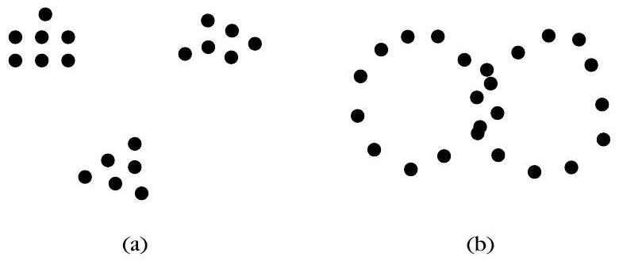
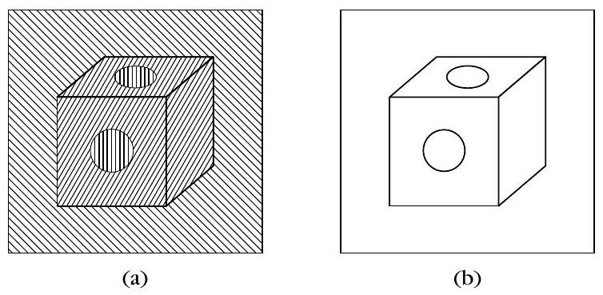
若預期的是緊密團，原文採用的參數向量 $\boldsymbol{\theta}$ 是哪一種？
本章多數演算法與前一章相比，叢集代表怎麼計算？
GMDAS：沒標籤也能用 EM 拆混合
▼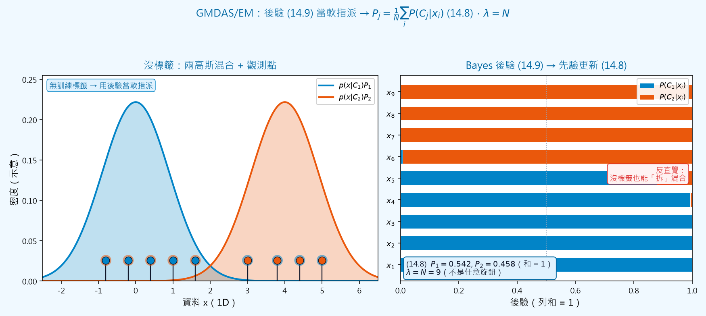
🤖 AI 生圖可用：重繪此示意圖的提示詞（結構化）
# AI 生圖提示詞 — kp-2 GMDAS／EM：後驗軟指派 → 先驗更新 ## WHAT 左右對照的教學圖。左欄：一維軸上兩條高斯密度曲線（一藍一橙）與若干觀測點；點旁用雙色暗示「軟指派」。右欄：每個資料點一條水平堆疊長條，藍段 = P(C1|xi)、橙段 = P(C2|xi)，兩段長度加總恰為 1；下方標註更新後的先驗 Pj 與 λ=N。 ## WHY 傳達因果：沒有訓練標籤時，用 Bayes 後驗 (14.9) 當軟名牌，再把所有後驗平均得到先驗 (14.8) Pj=(1/N)Σ P(Cj|xi)。反直覺：沒標籤也能「拆」混合；Lagrange 乘數 λ 被推成 N，不是任意旋鈕——改錯 λ 會讓先驗加總不再等於 1。遮住文字後仍應看出「密度 → 每點雙色比例 → 比例平均成新先驗」。 ## MUST show - 左：兩高斯混合 + 資料點（無類別標籤）。 - 右：每點後驗條狀，兩色加總 = 1。 - 公式標註 (14.9) 後驗與 (14.8) 先驗更新；寫明 λ=N。 - 標出「沒標籤也能拆混合」的反直覺。 - 可用自訂小數示意，但公式編號必須是 (14.8)/(14.9)。 ## AVOID - 禁止名詞連連看（方框串「EM」「E-step」「M-step」而無幾何）。 - 不要畫成有監督的分類（點上不應有真實類別色標當答案）。 - 不要把 λ 畫成可自由拖動的旋鈕。 - 不要省略「後驗列和 = 1 → 平均後先驗列和 = 1」的視覺。 ## STYLE 扁平科學示意；主題色 sky #0284c7 / #0369a3，對比橙 #ea580c，背景 #f0f9ff；繁中標籤；matplotlib 風；公式用 mathtext。
一句話
混合分解把每個點看成「以某個後驗機率屬於某一群」；沒有訓練標籤、先驗 $P_j$ 也不知道，就用 EM 反覆估參數與後驗——這套流程叫 GMDAS。收斂後用最終後驗指派，就變成貝氏分類。
是什麼
假設 $X$ 底下有 $m$ 個叢集 $C_j$（$j=1,\ldots,m$）。每個向量 $\boldsymbol{x}_i$（$i=1,\ldots,N$）屬於 $C_j$ 的機率是 $P(C_j\mid \boldsymbol{x}_i)$。指派規則很貝氏：若 $$ P(C_j\mid \boldsymbol{x}_i)\gt P(C_k\mid \boldsymbol{x}_i),\quad k=1,\ldots,m,\; k\neq j, $$ 就把 $\boldsymbol{x}_i$ 派給 $C_j$。
跟第 2 章分類任務差兩件事：(a) 沒有帶叢集標籤的訓練資料；(b) 先驗 $P(C_j)\equiv P_j$ 也不知道。目標一樣，工具得換——這是典型的「不完整訓練集」：缺的是每個 $\boldsymbol{x}_i$ 對應的叢集標籤，正好落在 §2.5.5 的 EM 框架。
沿用式 (2.81) 的記法，E-step 得到（式 14.1） $$ \begin{equation*} Q(\boldsymbol{\Theta};\boldsymbol{\Theta}(t))=\sum_{i=1}^{N}\sum_{j=1}^{m} P(C_j\mid \boldsymbol{x}_i;\boldsymbol{\Theta}(t))\,\ln\bigl(p(\boldsymbol{x}_i\mid C_j;\boldsymbol{\theta})P_j\bigr). \tag{14.1} \end{equation*} $$ 其中 $\boldsymbol{\theta}=[\boldsymbol{\theta}_1^T,\ldots,\boldsymbol{\theta}_m^T]^T$（$\boldsymbol{\theta}_j$ 是第 $j$ 群的參數）、$\boldsymbol{P}=[P_1,\ldots,P_m]^T$（先驗），合起來 $\boldsymbol{\Theta}=[\boldsymbol{\theta}^T,\boldsymbol{P}^T]^T$。
M-step 就是（式 14.2） $$ \begin{equation*} \boldsymbol{\Theta}(t+1)=\arg\max_{\boldsymbol{\Theta}} Q(\boldsymbol{\Theta};\boldsymbol{\Theta}(t)). \tag{14.2} \end{equation*} $$ 若各對 $\boldsymbol{\theta}_k,\boldsymbol{\theta}_j$ 函數獨立（沒有哪個 $\boldsymbol{\theta}_k$ 會洩漏另一個 $\boldsymbol{\theta}_j$ 的資訊），則 $\boldsymbol{\theta}_j$ 由下式決定（式 14.3） $$ \begin{equation*} \sum_{i=1}^{N}\sum_{j=1}^{m} P(C_j\mid \boldsymbol{x}_i;\boldsymbol{\Theta}(t))\,\frac{\partial}{\partial\boldsymbol{\theta}_j}\ln p(\boldsymbol{x}_i\mid C_j;\boldsymbol{\theta}_j)=\boldsymbol{0}. \tag{14.3} \end{equation*} $$
對 $\boldsymbol{P}$ 的最大化是有約束的（式 14.4）： $$ \begin{equation*} P_k\ge 0,\quad k=1,\ldots,m,\qquad \sum_{k=1}^{m} P_k=1. \tag{14.4} \end{equation*} $$ 對應的 Lagrangian（式 14.5） $$ \begin{equation*} \mathcal{Q}(\boldsymbol{P},\lambda)=Q(\boldsymbol{\Theta};\boldsymbol{\Theta}(t))-\lambda\Bigl(\sum_{k=1}^{m} P_k-1\Bigr). \tag{14.5} \end{equation*} $$ 對 $P_j$ 偏微並令其為 0，得到（式 14.6） $$ \begin{equation*} P_j=\frac{1}{\lambda}\sum_{i=1}^{N} P(C_j\mid \boldsymbol{x}_i;\boldsymbol{\Theta}(t)),\quad j=1,\ldots,m. \tag{14.6} \end{equation*} $$ 代回式 (14.4) 的歸一化，發現（式 14.7） $$ \begin{equation*} \lambda=\sum_{i=1}^{N}\sum_{j=1}^{m} P(C_j\mid \boldsymbol{x}_i;\boldsymbol{\Theta}(t))=N. \tag{14.7} \end{equation*} $$ 於是得到關鍵更新（式 14.8；演算法裡寫成 14.11） $$ \begin{equation*} P_j=\frac{1}{N}\sum_{i=1}^{N} P(C_j\mid \boldsymbol{x}_i;\boldsymbol{\Theta}(t)),\quad j=1,\ldots,m. \tag{14.8} \end{equation*} $$ 先驗就是「目前所有點對該群的後驗平均」——沒標籤也能估 $P_j$。
GMDAS（Generalized Mixture Decomposition Algorithmic Scheme）流程：
- 選初始 $\boldsymbol{\theta}(0)$、$\boldsymbol{P}(0)$；$t=0$。
- 重複：
- 用 Bayes 算後驗（式 14.9） $$ \begin{equation*} P(C_j\mid \boldsymbol{x}_i;\boldsymbol{\Theta}(t))=\frac{p(\boldsymbol{x}_i\mid C_j;\boldsymbol{\theta}_j(t))P_j(t)}{\sum_{k=1}^{m} p(\boldsymbol{x}_i\mid C_k;\boldsymbol{\theta}_k(t))P_k(t)}, \tag{14.9} \end{equation*} $$ $i=1,\ldots,N$，$j=1,\ldots,m$。
- 令 $\boldsymbol{\theta}_j(t+1)$ 為式 (14.10) 對 $\boldsymbol{\theta}_j$ 的解（與 14.3 同一條，只是放進迴圈裡）： $$ \begin{equation*} \sum_{i=1}^{N}\sum_{j=1}^{m} P(C_j\mid \boldsymbol{x}_i;\boldsymbol{\Theta}(t))\,\frac{\partial}{\partial\boldsymbol{\theta}_j}\ln p(\boldsymbol{x}_i\mid C_j;\boldsymbol{\theta}_j)=\boldsymbol{0}. \tag{14.10} \end{equation*} $$
- 更新先驗（式 14.11，就是 14.8） $$ \begin{equation*} P_j(t+1)=\frac{1}{N}\sum_{i=1}^{N} P(C_j\mid \boldsymbol{x}_i;\boldsymbol{\Theta}(t)),\quad j=1,\ldots,m. \tag{14.11} \end{equation*} $$
- $t\leftarrow t+1$。
- 直到對 $\boldsymbol{\Theta}$ 收斂。合用的終止條件是 $$ \lVert\boldsymbol{\Theta}(t+1)-\boldsymbol{\Theta}(t)\rVert\lt\varepsilon, $$ 其中 $\lVert\cdot\rVert$ 是適當的向量範數，$\varepsilon$ 是使用者給的小常數。
這套方案保證收斂到對數概似的全域或局部極大；即使只到局部極大，仍可能把 $X$ 的叢集結構抓得不錯。
收斂後，用式 (14.9) 的最終後驗 $P(C_j\mid \boldsymbol{x}_i)$ 把向量指派到叢集——把每一群當成一類，任務就變成典型的貝氏分類。
為什麼
標籤沒了、先驗也不知道，直接套第 2 章的監督式 Bayes 會卡住。EM 的巧妙處是：E-step 用「目前猜的參數」算出每個點屬於各群的後驗（軟標籤），M-step 再把這些軟標籤當成權重去更新 $\boldsymbol{\theta}_j$ 與 $P_j$。式 (14.8) 特別好記：先驗等於後驗的樣本平均。
怎麼用 / 怎麼記
- 缺什麼：沒訓練標籤、先驗 $P_j$ 未知 → 不完整資料 → EM。
- 式 (14.1)：$Q$ 是「後驗當權重」的加權對數概似。
- 式 (14.8)/(14.11)：$P_j=$ 所有點對第 $j$ 群後驗的平均（分母是 $N$，因為 $\lambda=N$）。
- 式 (14.9)：後驗就是 Bayes 公式，分子是「概似 $\times$ 先驗」。
- 何時停：$\lVert\boldsymbol{\Theta}(t+1)-\boldsymbol{\Theta}(t)\rVert\lt\varepsilon$。
- 收斂後：最終後驗指派 $=$ 貝氏分類。
GMDAS 更新先驗的關鍵公式 (14.8)/(14.11) 是哪一條？
混合分解與第 2 章分類任務相比，下列哪一項符合原文？
高斯緊密團與混淆矩陣：Example 14.1(a)
▼一句話
資料若是緊密、超橢球狀的團，常態混合是對口的模型；把 GMDAS 的 $\boldsymbol{\theta}_j$ 換成均值 $\boldsymbol{\mu}_j$ 與共變 $\Sigma_j$，就得到高斯 EM 更新。Example 14.1(a) 三團分得夠開時，混淆矩陣幾乎是對角的。
是什麼
這一小節鎖定「$X$ 的向量形成緊密叢集」的情形。適合這種形狀的分布是常態（高斯），第 $j$ 群的條件密度為（式 14.12） $$ \begin{equation*} p(\boldsymbol{x}\mid C_j;\boldsymbol{\theta}_j)=\frac{1}{(2\pi)^{l/2}\lvert\Sigma_j\rvert^{1/2}}\exp\Bigl(-\tfrac12(\boldsymbol{x}-\boldsymbol{\mu}_j)^{T}\Sigma_j^{-1}(\boldsymbol{x}-\boldsymbol{\mu}_j)\Bigr). \tag{14.12} \end{equation*} $$ 取對數（式 14.13） $$ \begin{equation*} \ln p(\boldsymbol{x}\mid C_j;\boldsymbol{\theta}_j)=\ln\frac{\lvert\Sigma_j\rvert^{-1/2}}{(2\pi)^{l/2}}-\tfrac12(\boldsymbol{x}-\boldsymbol{\mu}_j)^{T}\Sigma_j^{-1}(\boldsymbol{x}-\boldsymbol{\mu}_j). \tag{14.13} \end{equation*} $$ 此時每個 $\boldsymbol{\theta}_j$ 包含均值 $\boldsymbol{\mu}_j$ 的 $l$ 個參數，以及 $\Sigma_j$ 的 $l(l+1)/2$ 個獨立參數。若假設共變是對角的，整個 $\boldsymbol{\theta}$ 剩 $2ml$ 個參數；若假設所有共變相等，則是 $ml+l(l+1)/2$ 個。
把 (14.12) 代入後驗 (14.9)，得到高斯版後驗（式 14.14） $$ \begin{equation*} P(C_j\mid \boldsymbol{x};\boldsymbol{\Theta}(t))=\frac{\lvert\Sigma_j(t)\rvert^{-1/2}\exp\bigl(-\tfrac12(\boldsymbol{x}-\boldsymbol{\mu}_j(t))^{T}\Sigma_j^{-1}(t)(\boldsymbol{x}-\boldsymbol{\mu}_j(t))\bigr)P_j(t)}{\sum_{k=1}^{m}\lvert\Sigma_k(t)\rvert^{-1/2}\exp\bigl(-\tfrac12(\boldsymbol{x}-\boldsymbol{\mu}_k(t))^{T}\Sigma_k^{-1}(t)(\boldsymbol{x}-\boldsymbol{\mu}_k(t))\bigr)P_k(t)}. \tag{14.14} \end{equation*} $$ 最一般的情形：$\boldsymbol{\mu}_j$、各 $\Sigma_j$ 都未知，且各 $\Sigma_j$ 可以互不相同。M-step 的更新是（式 14.15、14.16） $$ \begin{equation*} \boldsymbol{\mu}_j(t+1)=\frac{\sum_{k=1}^{N} P(C_j\mid \boldsymbol{x}_k;\boldsymbol{\Theta}(t))\,\boldsymbol{x}_k}{\sum_{k=1}^{N} P(C_j\mid \boldsymbol{x}_k;\boldsymbol{\Theta}(t))}, \tag{14.15} \end{equation*} $$ $$ \begin{equation*} \Sigma_j(t+1)=\frac{\sum_{k=1}^{N} P(C_j\mid \boldsymbol{x}_k;\boldsymbol{\Theta}(t))(\boldsymbol{x}_k-\boldsymbol{\mu}_j(t))(\boldsymbol{x}_k-\boldsymbol{\mu}_j(t))^{T}}{\sum_{k=1}^{N} P(C_j\mid \boldsymbol{x}_k;\boldsymbol{\Theta}(t))}. \tag{14.16} \end{equation*} $$ 高斯情形下，這兩式取代 GMDAS 裡的 (14.10)，而 (14.14) 取代 (14.9)。直觀：均值是以後驗當權重的加權平均；共變是同一套權重下的加權散布。
計算上每一步都要對 $m$ 個共變矩陣求逆才能算後驗，負擔不小。常見放鬆：假設共變都是對角，或假設全部相等（後者每步只需一次求逆）。
Example 14.1(a)。三個二維常態，均值 $\boldsymbol{\mu}_1=[1,1]^{T}$、$\boldsymbol{\mu}_2=[3.5,3.5]^{T}$、$\boldsymbol{\mu}_3=[6,1]^{T}$，共變 $$ \Sigma_1=\begin{bmatrix}1&-0.3\\-0.3&1\end{bmatrix},\quad \Sigma_2=\begin{bmatrix}1&0.3\\0.3&1\end{bmatrix},\quad \Sigma_3=\begin{bmatrix}1&0.7\\0.7&1\end{bmatrix}. $$ 每組抽 100 個向量，合成 $X$（三團分得較開）。初始化 $P_j=1/3$；令 $\boldsymbol{\mu}_i(0)=\boldsymbol{\mu}_i+\boldsymbol{y}_i$，其中 $\boldsymbol{y}_i$ 的兩個座標在 $[-1,1]$ 均勻亂數；同樣隨機初始化 $\Sigma_i(0)$。取 $\varepsilon=0.01$。高斯 GMDAS 跑了 38 次迭代後停止。最終估計 $P'=[0.35,0.31,0.34]^{T}$， $$ \boldsymbol{\mu}_1'=[1.28,1.16]^{T},\quad \boldsymbol{\mu}_2'=[3.49,3.68]^{T},\quad \boldsymbol{\mu}_3'=[5.96,0.84]^{T}, $$ 以及 $$ \Sigma_1'=\begin{bmatrix}1.45&0.01\\0.01&0.57\end{bmatrix},\quad \Sigma_2'=\begin{bmatrix}0.62&0.09\\0.09&0.74\end{bmatrix},\quad \Sigma_3'=\begin{bmatrix}0.30&0.0024\\0.0024&1.94\end{bmatrix}. $$ 對照樣本均值 $$ \hat{\boldsymbol{\mu}}_1=[1.16,1.13]^{T},\quad \hat{\boldsymbol{\mu}}_2=[3.54,3.56]^{T},\quad \hat{\boldsymbol{\mu}}_3=[5.97,0.76]^{T}, $$ 與樣本共變 $$ \hat{\Sigma}_1=\begin{bmatrix}1.27&-0.03\\-0.03&0.52\end{bmatrix},\quad \hat{\Sigma}_2=\begin{bmatrix}0.70&0.07\\0.07&0.98\end{bmatrix},\quad \hat{\Sigma}_3=\begin{bmatrix}0.32&0.05\\0.05&1.81\end{bmatrix}. $$ 最終估計夠靠近這三組的樣本均值／共變。
參數估完後，依 $P(C_j\mid \boldsymbol{x}_i)$ 把點指派到三群，結果與原始結構相當吻合。評分工具是混淆矩陣 $\boldsymbol{A}$：第 $(i,j)$ 元素 $=$ 來自第 $i$ 個分布、被指到第 $j$ 群的個數。本例 $$ A_1=\begin{bmatrix}99&0&1\\0&100&0\\3&4&93\end{bmatrix}. $$ 解讀：第一分布有 99% 被指到第一群；第二分布 100% 指到第二群；第三分布 93% 指到第三群。
為什麼
高斯的等高線是超橢球，所以「緊密、橢球狀的團」跟常態混合是同一件幾何事實。當三團分得夠開，後驗幾乎是 0/1，EM 估到的 $\boldsymbol{\mu}_j,\Sigma_j$ 就會貼近樣本均值／共變，混淆矩陣接近對角——這正是 Example 14.1(a) 要你看見的成功畫面。
怎麼用 / 怎麼記
- 何時用高斯 GMDAS：緊密／超橢球團，不是環、不是彎帶子。
- 均值更新：後驗加權平均（式 14.15）。
- 共變更新：同一套後驗權重下的加權外積（式 14.16）。
- 混淆矩陣 $A$：列＝真正來自哪個分布，行＝被指到哪一群。
- 例 14.1(a) 口訣：分得開 → $A_1$ 幾乎對角 → 99%、100%、93%。
- 樣本均值：$\hat{\boldsymbol{\mu}}_1=[1.16,1.13]^{T}$、$\hat{\boldsymbol{\mu}}_2=[3.54,3.56]^{T}$、$\hat{\boldsymbol{\mu}}_3=[5.97,0.76]^{T}$；演算法終值靠近它們。
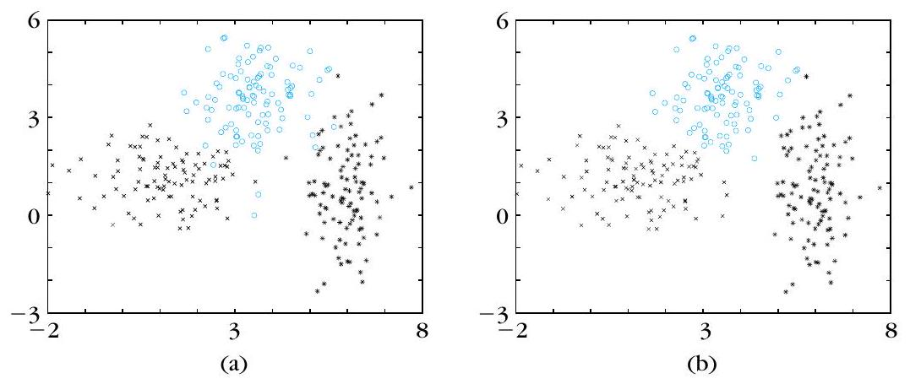
Example 14.1(a) 的混淆矩陣 $A_1=\begin{bmatrix}99&0&1\\0&100&0\\3&4&93\end{bmatrix}$ 應如何解讀？
Example 14.1(a) 三組的樣本均值 $\hat{\boldsymbol{\mu}}_1,\hat{\boldsymbol{\mu}}_2,\hat{\boldsymbol{\mu}}_3$ 為何？最終 GMDAS 估計與它們的關係？
重疊高斯與相交環：高斯 GMDAS 會失敗
▼一句話
高斯 GMDAS 擅長找「緊密團」。均值靠太近時各群會互相混進去；資料其實是相交環時，它仍會硬找出兩坨緊密團——就算 $X$ 根本沒有叢集結構，它也會「找出」緊密團。
是什麼
Example 14.1(b)。還是三個二維常態、每組 100 點，共變與 (a) 相同，但均值改靠近： $$ \boldsymbol{\mu}_1=[1,1]^{T},\quad \boldsymbol{\mu}_2=[2,2]^{T},\quad \boldsymbol{\mu}_3=[3,1]^{T}. $$ $\boldsymbol{\mu}_i$、$\Sigma_i$ 的初始化方式與 (a) 相同，再跑高斯 GMDAS。混淆矩陣變成 $$ A_2=\begin{bmatrix}85&4&11\\35&56&9\\26&0&74\end{bmatrix}. $$ 跟 $A_1$ 比，對角不再接近 100。讀列：第一分布 85 點進第一群，但有 4 點進第二、11 點進第三；第二分布只有 56 點留在第二群，另有 35 點被拉去第一群、9 點去第三群；第三分布 74 點進第三群，卻有 26 點跑去第一群（第二群為 0）。原文的結論：每一個得到的叢集，都混進了不少來自一個以上分布的點——這是重疊帶來的，不足為奇。
Example 14.2。資料 $X$ 是兩個相交的環狀叢集，每環 500 點。用高斯 GMDAS、$m=2$、$\varepsilon=0.01$，演算法在 72 次迭代後結束，但失敗了：它沒有把兩個環找回來。原因直接了當——高斯 GMDAS 在尋找緊密叢集。更一般地：即使用高斯的 GMDAS，揭出來的也會是「盡可能緊密」的團，即使 $X$ 底下的叢集根本是別種形狀。更糟的是：就算 $X$ 裡沒有叢集結構，它仍然會在 $X$ 裡「找出」緊密團。
兩則延伸（知道有人在補洞即可）：[Zhua 96] 考慮高斯被未知離群分布污染的情形，把 $p(\boldsymbol{x}\mid C_j)$ 寫成 $(1-\varepsilon_j)G(\boldsymbol{x}\mid C_j)+\varepsilon_j h(\boldsymbol{x}\mid C_j)$，並在 $h$ 為常數時仍可用同一套方法估均值、共變與污染程度；$\varepsilon_j$ 這裡是污染比例，不要跟終止門檻搞混。[Figu 02] 提出另一種混合分解，不必事先知道 $m$，也不要求非常小心的初始化。
為什麼
模型假設就是「每群一塊高斯橢球」。均值靠近時橢球重疊，後驗不再接近 0/1，指派自然互混——這是 (b)。環是空心的，高斯卻堅持用實心橢球去填，所以 72 步後你看到的是兩坨團，不是兩個環——這是 Example 14.2。演算法不會因為「資料不像高斯」就拒絕作答，它會把成本降到某個緊密團解上。
怎麼用 / 怎麼記
- (a) vs (b)：均值拉開 → $A_1$ 幾乎對角；均值靠近 $[1,1]^{T},[2,2]^{T},[3,1]^{T}$ → $A_2$ 每群都混。
- $A_2$ 對角：85、56、74——明顯比 99、100、93 差。
- 相交環：各 500 點；高斯 GMDAS、$m=2$、$\varepsilon=0.01$；72 次迭代後失敗。
- 失敗原因：它只找緊密團，形狀不對照就救不回來。
- 沒結構也會切：高斯 GMDAS 仍會「找出」緊密團。
- 補洞關鍵字：[Zhua 96] 污染；[Figu 02] 不必先知 $m$。
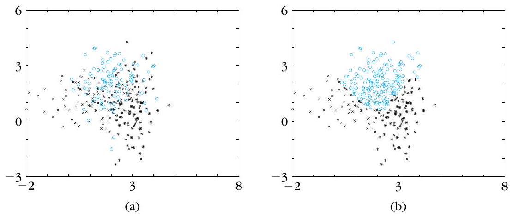
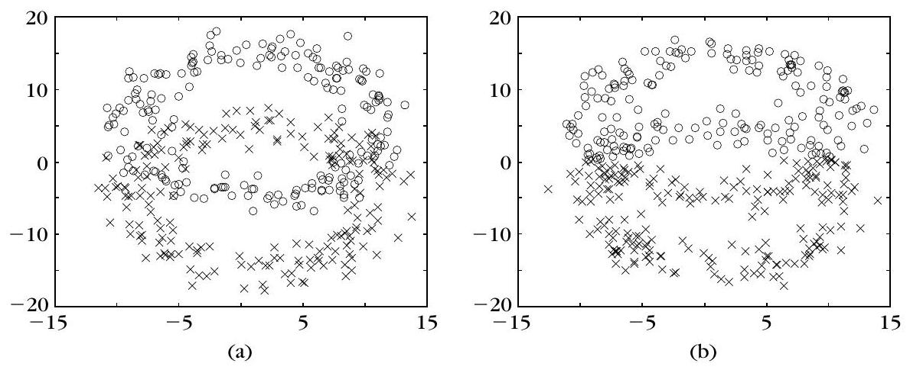
Example 14.1(b) 均值改為 $\boldsymbol{\mu}_1=[1,1]^{T}$、$\boldsymbol{\mu}_2=[2,2]^{T}$、$\boldsymbol{\mu}_3=[3,1]^{T}$（共變與 (a) 相同）時，混淆矩陣 $A_2$ 說明什麼？
Example 14.2 兩個相交環（各 500 點）上跑高斯 GMDAS（$m=2$、$\varepsilon=0.01$），原文結果為何？
後驗落在單純形上：離群點拉垮高斯
▼一句話
後驗 $P(C_j\mid\boldsymbol{x}_i)$ 被列和 $=1$ 釘在單純形上，離群點至少會分到一群「不算小」的後驗，再經 (14.9)–(14.11) 把該群的高斯參數拉歪——所以 GMDAS 對離群點很敏感。
是什麼
條件機率 $P(C_j\mid\boldsymbol{x}_i)$ 告訴我們 $\boldsymbol{x}_i$ 有多像屬於 $C_j$，但每一列必須滿足
$$ \sum_{j=1}^{m} P(C_j\mid\boldsymbol{x}_i)=1 \tag{14.17} $$
這是一張 $(m-1)$ 維超平面。記 $y_j\equiv P(C_j\mid\boldsymbol{x}_i)$、$\boldsymbol{y}^{T}=[y_1,\ldots,y_m]$、$\boldsymbol{a}^{T}=[1,1,\ldots,1]$，則 (14.17) 可寫成
$$ \boldsymbol{a}^{T}\boldsymbol{y}=1 \tag{14.18} $$
$\boldsymbol{y}$ 只能在這張超平面上走。再加上 $0\le y_j\le 1$（$j=1,\ldots,m$），它還被關在單位超立方體裡面。兩者交起來，就是單位超立方體內的一張單純形。圖 14.6 畫 $m=3$：立方體裡的陰影平面 $P$，就是 $\boldsymbol{y}$ 准許待的區域。
為什麼
離群點（noisy feature vector / outlier）也得守 (14.17)。$m$ 個非負數加起來等於 1，不可能全部都小於 $1/m$，所以至少有一個 $y_j$ 落在區間 $[1/m,\,1]$ 裡——「顯著」地屬於某一群。於是這個離群點會透過 (14.9)、(14.10)、(14.11) 去改對應叢集 $C_j$ 的後驗、參數與先驗估計。這就是 GMDAS 對離群點敏感的幾何原因。
還有一個一維的聯想：兩個同方差高斯、$P_1=P_2$、$\mu_1\lt \mu_2$。對 $x\lt (\mu_1+\mu_2)/2$ 有 $P(C_1\mid x)\gt P(C_2\mid x)$。取 $x_1=(3\mu_1+\mu_2)/4$ 與 $x_2=(5\mu_1-\mu_2)/4$，兩點離 $\mu_1$ 一樣遠，但 $P(C_1\mid x_1)\gt P(C_1\mid x_2)$——因為兩群後驗被 (14.17) 綁在一起，這一群高、另一群就得低。
怎麼用 / 怎麼記
例 14.3（圖 14.7）：$X$ 有 22 個向量。前 10 點抽自 $\boldsymbol{\mu}_1=[0,0]^{T}$、$\Sigma_1=I$；次 10 點抽自 $\boldsymbol{\mu}_2=[4.5,4.5]^{T}$、$\Sigma_2=I$（$I$ 為 $2\times 2$ 單位矩陣）；最後兩點是離群 $\boldsymbol{x}_{21}=[-6,5]^{T}$、$\boldsymbol{x}_{22}=[11,0]^{T}$。對高斯 pdf 跑 GMDAS，5 次迭代後
$$ \boldsymbol{P}'=[0.5,0.5]^{T},\quad \boldsymbol{\mu}_1'=[-0.58,0.35]^{T},\quad \boldsymbol{\mu}_2'=[4.98,4.00]^{T} $$ $$ \Sigma_1'=\begin{bmatrix}4.96&-2.01\\-2.01&2.63\end{bmatrix},\quad \Sigma_2'=\begin{bmatrix}3.40&-2.53\\-2.53&3.27\end{bmatrix} $$
$\boldsymbol{x}_{21}$、$\boldsymbol{x}_{22}$ 明明離兩團都很遠，但因 $\sum_{j=1}^{2}P(C_j\mid\boldsymbol{x}_i)=1$，正文得到 $P(C_1\mid\boldsymbol{x}_{21})=1$、$P(C_2\mid\boldsymbol{x}_{22})=1$。它們對 $\boldsymbol{\mu}_1$、$\boldsymbol{\mu}_2$、$\Sigma_1$、$\Sigma_2$ 的影響不可忽略：$\Sigma_1'$ 對角已從 $1$ 被拉到 $4.96$ 與 $2.63$。
若改在 $X_1=\{\boldsymbol{x}_i:i=1,\ldots,20\}$（去掉最後兩點）、同一組初值再跑 5 次：
$$ \boldsymbol{P}''=[0.5,0.5]^{T},\quad \boldsymbol{\mu}_1''=[-0.03,-0.12]^{T},\quad \boldsymbol{\mu}_2''=[4.37,4.40]^{T} $$ $$ \Sigma_1''=\begin{bmatrix}0.50&-0.01\\-0.01&1.22\end{bmatrix},\quad \Sigma_2''=\begin{bmatrix}1.47&0.44\\0.44&1.13\end{bmatrix} $$
對比立刻看出：去掉離群點後，均值更靠近 $[0,0]^{T}$ 與 $[4.5,4.5]^{T}$，協方差也不再被撐大。
- 口訣：列和 $=1$ → $\boldsymbol{y}$ 困在單純形 → 離群點至少有一群 $y_j\ge 1/m$ → 高斯被拉垮。
- 圖 14.6：$m=3$ 時，准許區域是立方體裡的陰影平面 $P$。
- 例 14.3 數字：5 次迭代 $\boldsymbol{P}'=[0.5,0.5]^{T}$；離群後驗 $P(C_1\mid\boldsymbol{x}_{21})=1$、$P(C_2\mid\boldsymbol{x}_{22})=1$。
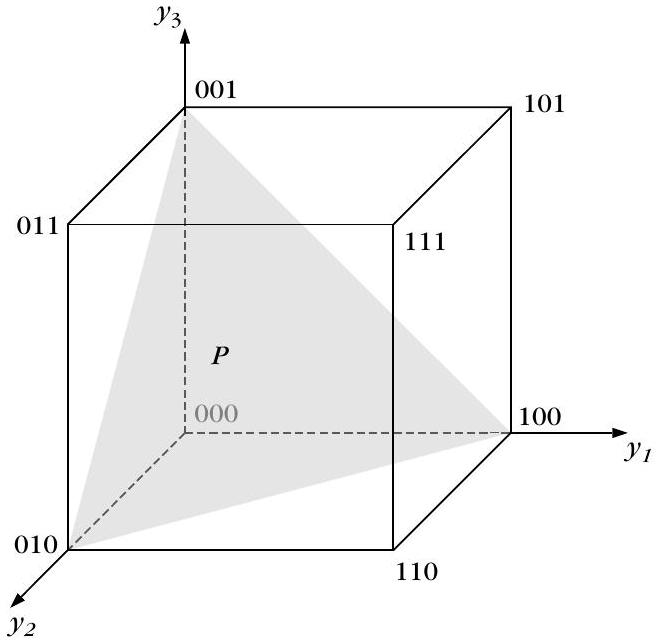
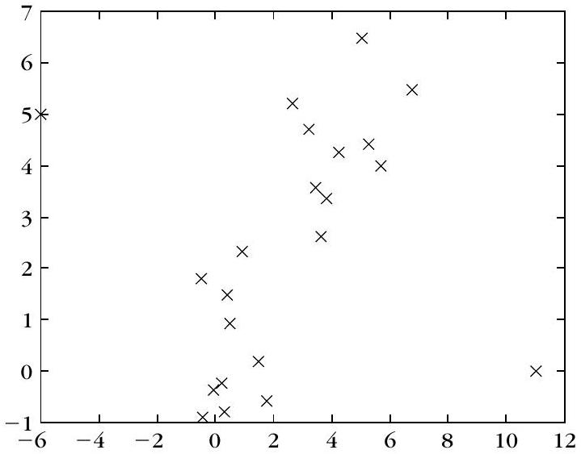
令 $y_j=P(C_j\mid\boldsymbol{x}_i)$。依 (14.17)、(14.18) 與 $0\le y_j\le 1$，後驗向量 $\boldsymbol{y}$ 落在何處？
例 14.3 對 22 點跑高斯 GMDAS，5 次迭代後關於離群點與估計，下列何者正確？
模糊分群：$J_q$、列和 $=1$、fuzzifier $q$
▼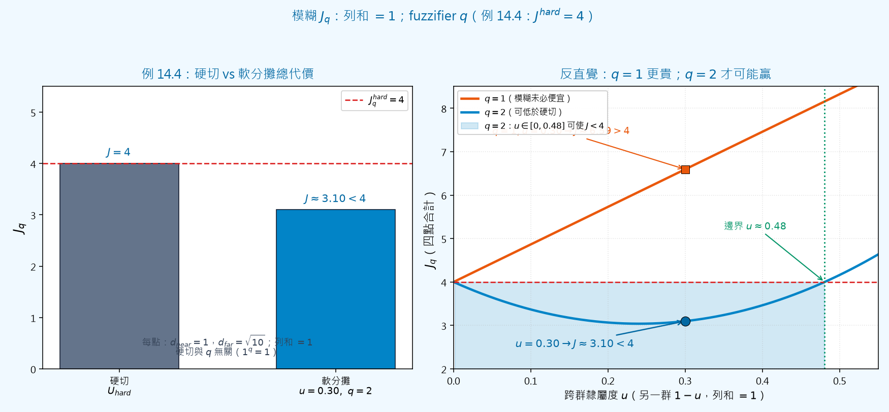
🤖 AI 生圖可用：重繪此示意圖的提示詞（結構化）
# AI 生圖提示詞 — kp-6 模糊 Jq、列和=1、fuzzifier q ## WHAT 左右對照。左欄：柱狀對照「硬切 U_hard 的 J=4」與「q=2、u=0.30 軟分攤的 J≈3.10」。右欄：橫軸為跨群隸屬度 u（列和約束下另一群為 1−u），縱軸為四點合計 Jq；畫出 q=1 與 q=2 兩條 J(u) 曲線，硬切基準線 J=4，並標出 q=2 可使 J<4 的區間 u∈[0,0.48] 與手算點 u=0.30。 ## WHY 因果：列和=1 綁住各群隸屬；Jq=Σ uij^q d；q 控制「准不准腳踏兩條船」。反直覺：q=1 時同一組軟分攤（如 u=0.30）會讓 J≈6.60>4，模糊未必比硬切便宜；q=2 時才可能在 [0,0.48] 內讓 J<4（例 14.4 硬切永遠 J_hard=4）。遮住文字後應看出「橙線全程在 4 上方、藍線有一段沉到 4 下方」。 ## MUST show - 原文數字：Jq^hard=4；q=2 時 u_i2∈[0,0.48]（i=1,2）可 <4。 - 手算：u=0.30 → J≈3.10<4。 - q=1 同 u 時 J>4 的對照點。 - 標明 d_near=1、d_far=√10（例 14.4 歐氏距離）。 - 硬切與 q 無關（1^q=1）。 ## AVOID - 禁止名詞連連看（「fuzzifier」「列和」方框箭頭）。 - 不要發明非原文的臨界數字（邊界約 0.48，勿改成 0.5）。 - 不要畫成機率 pdf 混合（本題是模糊隸屬，不是 GMDAS）。 - 不要暗示「模糊永遠比硬切便宜」。 ## STYLE 扁平科學曲線圖；主題色 sky #0284c7 / #0369a3，對比橙 #ea580c 與警示紅，背景 #f0f9ff；繁中；標出臨界與手算點。
一句話
機率法要先假設 pdf、也不好抓殼狀叢集；模糊分群讓一點同時屬於多群，代價函數 $J_q$ 用 fuzzifier $q\gt 1$ 加權隸屬度，但仍用列和 $=1$ 把各群隸屬度綁在一起。
是什麼
前面的機率演算法有兩件麻煩：一要為 pdf 選模型，二不容易處理「不是緊密團、而是殼狀」的叢集。模糊分群想擺脫這些限制。最大差別：模糊方案裡，一個向量可以同時屬於多群；機率方案裡（最終指派）每個向量只專屬一群。
第 11 章已見過：模糊 $m$ 分群是一組函數 $u_j:X\to A$（$j=1,\ldots,m$）。$A=[0,1]$ 是模糊分群；$A=\{0,1\}$ 則是硬分群（一點只進一群）。叢集數與形狀事先已知：緊密團用點代表（$l$ 個參數）；超球殼用球心加半徑（$l+1$ 個參數）。
記 $\boldsymbol{\theta}_j$ 為第 $j$ 群的參數化代表，$\boldsymbol{\theta}\equiv[\boldsymbol{\theta}_1^{T},\ldots,\boldsymbol{\theta}_m^{T}]^{T}$，$U$ 是 $N\times m$ 矩陣、$(i,j)$ 元素為 $u_j(\boldsymbol{x}_i)$，$d(\boldsymbol{x}_i,\boldsymbol{\theta}_j)$ 是相異度，$q\gt 1$ 叫 fuzzifier。多數著名模糊演算法最小化
$$ J_q(\boldsymbol{\theta},U)=\sum_{i=1}^{N}\sum_{j=1}^{m} u_{ij}^{q}\, d(\boldsymbol{x}_i,\boldsymbol{\theta}_j) \tag{14.19} $$
約束為
$$ \sum_{j=1}^{m} u_{ij}=1,\quad i=1,\ldots,N \tag{14.20} $$
且 $u_{ij}\in[0,1]$，以及
$$ 0\lt \sum_{i=1}^{N} u_{ij}\lt N,\quad j=1,\ldots,m \tag{14.21} $$
也就是：點 $\boldsymbol{x}_i$ 對第 $j$ 群的隸屬度，會透過 (14.20) 跟它對其餘 $m-1$ 群的隸屬度互相牽連。
$q$ 會把 $J_q$ 推向模糊或推向硬。固定 $\boldsymbol{\theta}$ 時：$q=1$，沒有任何模糊分群能在 $J_q$ 上打敗最好的硬分群；$q\gt 1$，有時模糊分群的 $J_q$ 可以比最好的硬分群更低。
例 14.4：$X=\{\boldsymbol{x}_1,\boldsymbol{x}_2,\boldsymbol{x}_3,\boldsymbol{x}_4\}$，$\boldsymbol{x}_1=[0,0]^{T}$、$\boldsymbol{x}_2=[2,0]^{T}$、$\boldsymbol{x}_3=[0,3]^{T}$、$\boldsymbol{x}_4=[2,3]^{T}$；代表 $\boldsymbol{\theta}_1=[1,0]^{T}$、$\boldsymbol{\theta}_2=[1,3]^{T}$，用歐氏距離。對這組代表，最小化 $J_q$ 的硬二分群是
$$ U_{\mathrm{hard}}=\begin{bmatrix}1&0\\1&0\\0&1\\0&1\end{bmatrix} $$
前兩點屬群 1、後兩點屬群 2。代入 (14.19) 得 $J_q^{\mathrm{hard}}(\boldsymbol{\theta},U)=4$，且硬分群不依賴 $q$。
- $q=1$ 且 $u_{ij}\in(0,1)$ 時， $J_1^{\mathrm{fuzzy}}=\sum_{i=1}^{2}(u_{i1}+u_{i2}\sqrt{10})+\sum_{i=3}^{4}(u_{i1}\sqrt{10}+u_{i2})$。 因每點 $u_{i1},u_{i2}\gt 0$ 且列和 $=1$，必有 $J_1^{\mathrm{fuzzy}}\gt 4$——硬的一定比較好。
- $q=2$：若 $u_{i2}\in[0,0.48]$（$i=1,2$）且 $u_{i1}\in[0,0.48]$（$i=3,4$），並維持 $u_{i1}=1-u_{i2}$，則 $J_2^{\mathrm{fuzzy}}\lt 4$——模糊可以贏。
- $q=3$：區間改成 $[0,0.67]$，同樣可讓 $J_3^{\mathrm{fuzzy}}\lt 4$。
為什麼
列和 $=1$ 讓隸屬度互相牽連，這點跟後驗機率很像；但模糊不必先指定 pdf，距離 $d$ 也可以改成「點到殼」的距離，後面才能抓橢球殼、抛物面殼。fuzzifier $q$ 決定「軟到什麼程度」：$q=1$ 時代價函數偏愛好硬切；$q$ 變大（例 14.4 從 $2$ 到 $3$），能讓 $J_q$ 低於硬分群的隸屬度區間變寬，模糊解更容易勝出。
怎麼用 / 怎麼記
最小化 $J_q$：先假設沒有任何 $\boldsymbol{x}_i$ 剛好落在代表上。對每個 $\boldsymbol{x}_i$，令 $Z_i$ 為滿足 $d(\boldsymbol{x}_i,\boldsymbol{\theta}_j)=0$ 的代表指標集合；目前假設所有 $Z_i=\emptyset$。對 $U$ 做帶 (14.20) 的 Lagrange：
$$ \mathcal{J}(\boldsymbol{\theta},U)=\sum_{i=1}^{N}\sum_{j=1}^{m} u_{ij}^{q} d(\boldsymbol{x}_i,\boldsymbol{\theta}_j)-\sum_{i=1}^{N}\lambda_i\Bigl(\sum_{j=1}^{m} u_{ij}-1\Bigr) \tag{14.22} $$ $$ \frac{\partial\mathcal{J}}{\partial u_{rs}}=q u_{rs}^{q-1} d(\boldsymbol{x}_r,\boldsymbol{\theta}_s)-\lambda_r \tag{14.23} $$
令偏導 $=0$ 得 (14.24)，代回列和後解出 $\lambda_r$（14.25），再整理成隸屬度更新
$$ u_{rs}=\frac{1}{\sum_{j=1}^{m}\Bigl(\frac{d(\boldsymbol{x}_r,\boldsymbol{\theta}_s)}{d(\boldsymbol{x}_r,\boldsymbol{\theta}_j)}\Bigr)^{\frac{1}{q-1}}} \tag{14.26} $$
（$r=1,\ldots,N$，$s=1,\ldots,m$）。對代表 $\boldsymbol{\theta}_j$ 則令
$$ \frac{\partial J(\boldsymbol{\theta},U)}{\partial\boldsymbol{\theta}_j}=\sum_{i=1}^{N} u_{ij}^{q}\frac{\partial d(\boldsymbol{x}_i,\boldsymbol{\theta}_j)}{\partial\boldsymbol{\theta}_j}=\boldsymbol{0} \tag{14.27} $$
(14.26) 與 (14.27) 耦合，一般沒有閉式解，改用交替最佳化。
GFAS（Generalized Fuzzy Algorithmic Scheme）：選初值 $\boldsymbol{\theta}_j(0)$；每步先用當前 $\boldsymbol{\theta}$ 依 (14.26) 更新整張 $U$，再對每個 $j$ 解 (14.28)（即 (14.27) 在 $t-1$ 的 $u_{ij}^{q}$ 下）得到 $\boldsymbol{\theta}_j(t)$。停止條件可用 $\lVert\boldsymbol{\theta}(t)-\boldsymbol{\theta}(t-1)\rVert\lt \varepsilon$。這套又叫 AO（alternating optimization）：固定 $\boldsymbol{\theta}$ 更新 $U$，再固定 $U$ 更新 $\boldsymbol{\theta}$。
- 若某 $\boldsymbol{x}_i$ 的 $Z_i\ne\emptyset$（點剛好落在某些代表上）：在 $j\in Z_i$ 之間任意分享隸屬度，但 $\sum_{j\in Z_i}u_{ij}=1$，且 $j\notin Z_i$ 時 $u_{ij}=0$——列和仍 $=1$。若只跟一個 $\boldsymbol{\theta}_j$ 重合，則 $u_{ij}=1$、其餘為 $0$。
- 也可以從 $U(0)$ 起步，先更新 $\boldsymbol{\theta}_j$。
- 口訣：$J_q=\sum_i\sum_j u_{ij}^{q}d$；列和 $=1$；$q=1$ 硬贏、 $q\gt 1$ 模糊才可能贏；AO 交替刷 $U$ 與 $\boldsymbol{\theta}$。
例 14.4 中，硬分群的 $J_q^{\mathrm{hard}}$ 以及 $q=1,2,3$ 時模糊代價的比較，下列何者正確？
最小化 $J_q$ 在 $Z_i=\emptyset$ 時，隸屬度 $u_{rs}$ 的閉式（14.26）為何？
點代表：Fuzzy c-Means
▼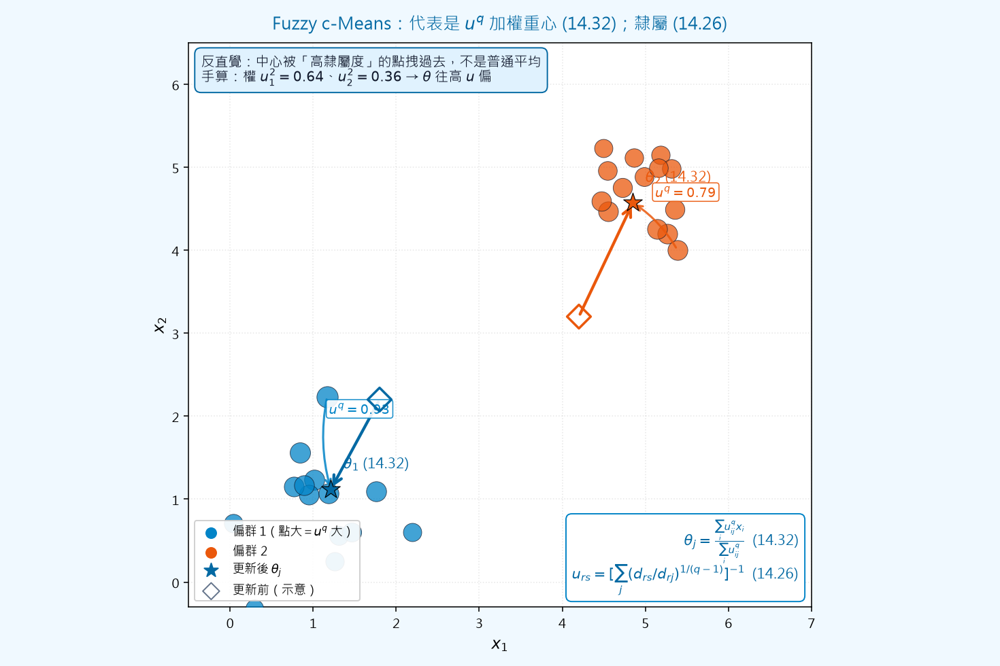
🤖 AI 生圖可用：重繪此示意圖的提示詞（結構化）
# AI 生圖提示詞 — kp-7 Fuzzy c-Means：u^q 加權重心 ## WHAT 二維散點：兩團緊密點（藍／橙）。每個點的標記大小反映對其主群的 u^q 權重。圖上有更新前中心（空心菱形）與更新後中心（星形），粗箭頭顯示中心位移；另從高權重點拉細箭頭指向新中心，標註該點的 u^q。角落寫公式 (14.32) 加權平均與 (14.26) 隸屬度。 ## WHY 因果：隸屬由距離比 (14.26) 決定；代表更新是 u^q 加權重心 (14.32)。反直覺：中心被「高隸屬度」的點拽過去，不是普通算術平均——權重大的點拉力更明顯（手算示意：u1^2=0.64、u2^2=0.36 會往高 u 偏）。遮住文字後應看出「大點把星形中心拉近自己、小點幾乎拉不動」。 ## MUST show - 兩團 2D 散點 + 兩個叢集中心。 - 用箭頭／點大小顯示 u^q 權重把中心拉向高 u 點。 - 標註公式 (14.32) 與 (14.26)。 - 對照更新前／後中心位置，凸顯「被拽」。 - 可附手算權重 0.64 / 0.36 的偏心示意說明。 ## AVOID - 禁止名詞連連看（FCM／AO／GFAS 方框流程）。 - 不要畫成普通 k-means 硬切（點不應只有 0/1 顏色而無權重大小）。 - 不要省略「高 u^q → 強拉力」的視覺。 - 不要虛構 Example 14.5 的混淆矩陣數字當本圖主軸（本圖主軸是機制，不是三距離比較表）。 ## STYLE 扁平教學散點；主題色 sky #0284c7 / #0369a3 與對比橙 #ea580c，背景 #f0f9ff；繁中標籤；matplotlib 風；公式 mathtext。
一句話
緊密團用點當代表；把馬氏型距離 (14.29) 塞進 GFAS，代表的更新就是隸屬度 $q$ 次方加權平均——這就是 Fuzzy $c$-Means（FCM，也叫 Fuzzy $k$-means）。
是什麼
叢集是緊密的（compact）時，每群用一個點代表，$\boldsymbol{\theta}_j$ 有 $l$ 個參數。點到代表的相異度可用任何點對距離，原文給兩個常見選擇。
馬氏型（二次型）距離：$A$ 為對稱正定矩陣，
$$ d(\boldsymbol{x}_i,\boldsymbol{\theta}_j)=(\boldsymbol{x}_i-\boldsymbol{\theta}_j)^{T} A(\boldsymbol{x}_i-\boldsymbol{\theta}_j) \tag{14.29} $$
Minkowski 距離（$p$ 為正整數）：
$$ d(\boldsymbol{x}_i,\boldsymbol{\theta}_j)=\Bigl(\sum_{k=1}^{l}\lvert x_{ik}-\theta_{jk}\rvert^{p}\Bigr)^{1/p} \tag{14.30} $$
把 (14.29) 對 $\boldsymbol{\theta}_j$ 微分得 $\partial d/\partial\boldsymbol{\theta}_j=2A(\boldsymbol{\theta}_j-\boldsymbol{x}_i)$（14.31）。代入 GFAS 的 (14.28)，因 $A$ 正定可逆，左乘 $A^{-1}$ 後 $A$ 消掉，得到
$$ \boldsymbol{\theta}_j(t)=\frac{\sum_{i=1}^{N} u_{ij}^{q}(t-1)\,\boldsymbol{x}_i}{\sum_{i=1}^{N} u_{ij}^{q}(t-1)} \tag{14.32} $$
這就是 Fuzzy $c$-Means（FCM），文獻裡也叫 Fuzzy $k$-means：新代表是資料點以 $u_{ij}^{q}$ 為權的加權平均。注意：更新式裡看不到 $A$，但 $A$ 仍透過距離影響 $U$，所以不同的 $A$ 仍會得到不同的 $\boldsymbol{\theta}$。
若改用 Minkowski，原文只討論 $p$ 為偶數且 $p\lt +\infty$ 的情形，才能保證 $d$ 對 $\boldsymbol{\theta}_j$ 可微。偏導為 (14.33)，代入 (14.28) 得到 $l$ 條非線性方程式 (14.34)（未知數是 $\boldsymbol{\theta}_j$ 的 $l$ 個座標），用 Gauss–Newton 或 Levenberg–Marquardt（L-M）迭代求解。這類演算法叫 $p$FCM（$p$ 標明用哪一種 Minkowski）。第 $t$ 步的迭代初值可取第 $t-1$ 步的估計。
為什麼
點代表適合「一坨一坨」的緊密叢集；距離選錯（例如 $A$ 選得不適合資料幾何），FCM 會把團切壞。Minkowski 在一般 $p$ 下不可微，所以實務上 $p$FCM 才限制偶數 $p$。例 14.5 用同一批資料對照三種距離，就是要看：$A=I$ 與 $p=4$ 在團不太靠近時幾乎能對上真實分布；隨便改 $A$，混淆矩陣會明顯變差。
怎麼用 / 怎麼記
例 14.5(a)：與例 14.1(a) 同一資料（三個二維高斯、各 100 點）。GFAS 初值對應例 14.1 的 $\boldsymbol{\mu}_j$（改放進 $\boldsymbol{\theta}_j$），fuzzifier $q=2$。三種距離：
- (i) $A=I$：$\boldsymbol{\theta}_1=[1.37,0.71]^{T}$，$\boldsymbol{\theta}_2=[3.14,3.12]^{T}$，$\boldsymbol{\theta}_3=[5.08,1.21]^{T}$。
- (ii) $A=\begin{bmatrix}2&1.5\\1.5&2\end{bmatrix}$：$\boldsymbol{\theta}_1=[1.47,0.56]^{T}$，$\boldsymbol{\theta}_2=[3.54,1.97]^{T}$，$\boldsymbol{\theta}_3=[5.21,2.97]^{T}$。
- (iii) Minkowski $p=4$：$\boldsymbol{\theta}_1=[1.13,0.74]^{T}$，$\boldsymbol{\theta}_2=[2.99,3.16]^{T}$，$\boldsymbol{\theta}_3=[5.21,3.16]^{T}$。
把每點指派給 $u_{ij}$ 最大的那一群，得到混淆矩陣
$$ A_{i}=\begin{bmatrix}98&2&0\\14&84&2\\11&0&89\end{bmatrix},\quad A_{ii}=\begin{bmatrix}63&11&26\\5&95&0\\39&23&38\end{bmatrix},\quad A_{iii}=\begin{bmatrix}96&0&4\\11&89&0\\13&2&85\end{bmatrix} $$
$A_i$ 與 $A_{iii}$：幾乎同一分布的點被分進同一群。$A_{ii}$ 明顯較亂——$A$ 怎麼選很關鍵。
例 14.5(b)：改用例 14.1(b) 那種較靠近的三團，三種距離的表現都變差（例如 $A=I$ 的混淆矩陣第一列為 $51,46,3$）。原文結論：團越靠近，所有算法越差；用 (14.29) 時 $A$ 的選擇致命。本例中 $A=I$ 在團不太近時幾乎完美還原結構，Minkowski $p=4$ 也一樣。
Remarks（擇要）：
- fuzzifier $q$ 對模糊分群（尤其 FCM）很要緊；文獻有啟發式選 $q$ 的指引。
- 不少廣義 FCM 是在 (14.19) 上再加項再最小化。
- 也有核化（kernelized）FCM。
- 口訣：FCM＝$u^{q}$ 加權平均 (14.32)；$A$ 正定、$p$ 偶數才好微；$A=I$ 與 $p=4$ 在例 14.5(a) 表現好，$A$ 亂選就翻車。
把距離 (14.29) 代入 GFAS 後，Fuzzy $c$-Means 的代表更新 (14.32) 是什麼？
例 14.5(a)、$q=2$，關於三種距離的代表與混淆矩陣，下列何者符合原文？
二次曲面距離：$d_a,d_p,d_{nr},d_r$
▼一句話
殼狀叢集用二次曲面當代表；點到曲面的距離有代數 $d_a$、垂直 $d_p$、徑向 $d_r$ 與正規化徑向 $d_{nr}$——便宜的 $d_a,d_{nr}$ 會偏向大橢圓，幾何正確的 $d_p$ 難算，超橢球可用 $d_r\ge d_p$ 來近似。
是什麼
§14.3.2 處理二次曲面形狀的叢集（超橢球、超抛物面等）。要最小化 (14.19)，必須先定義「點到二次曲面」的距離。一般二次曲面 $Q$ 寫成
$$ \boldsymbol{x}^{T} A\boldsymbol{x}+\boldsymbol{b}^{T}\boldsymbol{x}+c=0 \tag{14.35} $$
（$A$ 為 $l\times l$ 對稱、$\boldsymbol{b}$ 為 $l\times 1$、$c$ 為純量）。也可改寫成 $\boldsymbol{q}^{T}\boldsymbol{p}=0$（14.36），便於推 GFAS。
代數距離 $d_a$（squared algebraic distance）
$$ d_a^{2}(\boldsymbol{x},Q)=(\boldsymbol{x}^{T} A\boldsymbol{x}+\boldsymbol{b}^{T}\boldsymbol{x}+c)^{2} \tag{14.39} $$
等價寫成 $d_a^{2}=\boldsymbol{p}^{T} M\boldsymbol{p}$、$M=\boldsymbol{q}\boldsymbol{q}^{T}$（14.40）。它像「點到超平面距離」的推廣，計算便宜，但有偏差。
垂直距離 $d_p$（squared perpendicular distance）
$$ d_p^{2}(\boldsymbol{x},Q)=\min_{\boldsymbol{z}}\lVert\boldsymbol{x}-\boldsymbol{z}\rVert^{2} \quad\text{s.t.}\quad \boldsymbol{z}^{T} A\boldsymbol{z}+\boldsymbol{b}^{T}\boldsymbol{z}+c=0 \tag{14.41, 14.42} $$
也就是 $\boldsymbol{x}$ 到 $Q$ 上最近點 $\boldsymbol{z}$ 的歐氏距離平方——從 $\boldsymbol{x}$ 作垂線到曲面的長度。直覺最正確，但要對 Lagrange (14.43) 求 $\boldsymbol{z}$，得到 $\boldsymbol{z}=\tfrac12(I+\lambda A)^{-1}(2\boldsymbol{x}-\lambda\boldsymbol{b})$（14.44），把 $\boldsymbol{z}$ 代回曲面得到 $\lambda$ 的 $2l$ 次多項式，對每個實根算 $\boldsymbol{z}_k$ 再取最近。所以 $d_p$ 難算。
徑向距離 $d_r$：只適用於超橢球。先把 (14.35) 寫成 $(\boldsymbol{x}-\boldsymbol{c})^{T} A(\boldsymbol{x}-\boldsymbol{c})=1$（14.45），$\boldsymbol{c}$ 是橢圓中心、$A$ 對稱正定（決定長短軸與方向）。$d_r^{2}=\lVert\boldsymbol{x}-\boldsymbol{z}\rVert^{2}$（14.46），約束是 $\boldsymbol{z}$ 在橢球上（14.47），且 $\boldsymbol{z}-\boldsymbol{c}=a(\boldsymbol{x}-\boldsymbol{c})$（14.48）——先沿 $\boldsymbol{x}-\boldsymbol{c}$ 這條線找到與 $Q$ 的交點 $\boldsymbol{z}$，再算歐氏距離（圖 14.8）。$d_r$ 可當 $d_p$ 的近似，且 $d_r\ge d_p$。
正規化徑向距離 $d_{nr}$（同樣給超橢球）
$$ d_{nr}^{2}(\boldsymbol{x},Q)=\Bigl(\bigl((\boldsymbol{x}-\boldsymbol{c})^{T} A(\boldsymbol{x}-\boldsymbol{c})\bigr)^{1/2}-1\Bigr)^{2} \tag{14.49} $$
可以證明（式 14.50）
$$ d_r^{2}(\boldsymbol{x},Q)=d_{nr}^{2}(\boldsymbol{x},Q)\,\lVert\boldsymbol{z}-\boldsymbol{c}\rVert^{2} \tag{14.50} $$
其中 $\boldsymbol{z}$ 是線段 $\boldsymbol{x}-\boldsymbol{c}$ 與 $Q$ 的交點。這就是「正規化」一詞的來由：$d_r$ 比 $d_{nr}$ 多乘上 $\lVert\boldsymbol{z}-\boldsymbol{c}\rVert^{2}$。
為什麼
機器人視覺裡，物體邊界常常是殼狀或線狀叢集，二次曲面代表就是來抓這些殼。四種距離的取捨是：
- $d_a$：算得快，但偏向較大的橢圓（同樣的點，大橢圓的代數距離較小）。
- $d_p$：幾何上最公道、不偏向大小，但要求 $2l$ 次多項式，貴。
- $d_r$：超橢球專用，圖 14.8 顯示它常能近似 $d_p$；永遠 $d_r\ge d_p$。
- $d_{nr}$ 與 $d_a$ 一樣：中心相同、方向相同的同心橢圓上，所有點到 $Q$ 的 $d_a$ 與 $d_{nr}$ 都是常數——不隨點在該橢圓上移動而變。
怎麼用 / 怎麼記
例 14.6（圖 14.8–14.9）：橢圓 $Q$ 中心 $\boldsymbol{c}=[0,0]^{T}$、$A=\mathrm{diag}(0.25,1)$；另一橢圓 $Q_1$ 中心相同、$A_1=\mathrm{diag}(1/16,1/4)$。點 $P$ 沿 $Q_1$ 從 $A(4,0)$ 走到 $B(-4,0)$（$x_2\gt 0$）。結果：$d_a$ 與 $d_{nr}$ 不隨 $P$ 移動而變（同心同向橢圓上距離為常數）；$d_p$、$d_r$ 則會變，且 $P$ 越靠近 $C(2,0)$ 兩者越小。$d_r$ 可當 $d_p$ 的近似；但請記住 $d_p$ 適用一般二次曲面，$d_r$ 只適用超橢球。
例 14.7 / 表 14.2（圖 14.10）：兩橢圓 $(\boldsymbol{x}-\boldsymbol{c}_j)^{T} A_j(\boldsymbol{x}-\boldsymbol{c}_j)=1$，$\boldsymbol{c}_1=[0,0]^{T}$、$\boldsymbol{c}_2=[8,0]^{T}$，$A_1=\mathrm{diag}(1/16,1/4)$（較大）、$A_2=\mathrm{diag}(1/4,1)$（較小）。點 $A(5,0)$、$B(3,0)$、$C(0,2)$、$D(5.25,1.45)$。關鍵數字：
- $d_p(A,Q_1)=d_p(B,Q_1)=d_p(C,Q_1)=1$（到同一橢圓、沿軸向的垂直距離相同）。
- $d_p(A,Q_1)=d_p(A,Q_2)=1$——不偏向大小。
- $d_a(A,Q_1)=0.32\lt d_a(A,Q_2)=1.56$，$d_{nr}(A,Q_1)=0.06\lt d_{nr}(A,Q_2)=0.25$——偏向大橢圓 $Q_1$。
- 表中一律 $d_r\ge d_p$（例如 $A$ 對兩橢圓 $d_r=d_p=1$；$C$ 對 $Q_2$ 則 $d_r=46.72\gt d_p=44.32$；$D$ 對 $Q_1$ 為 $3.30\gt 2.78$）。
- 口訣：殼狀用二次曲面；$d_a$ 便宜會偏大；$d_p$ 幾何正確難算；$d_r$ 近似 $d_p$ 且 $d_r\ge d_p$；$d_{nr}$ 與 $d_a$ 在同心同向橢圓上是常數；記住 (14.50)。
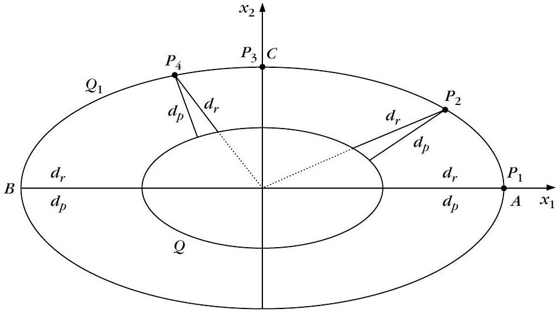
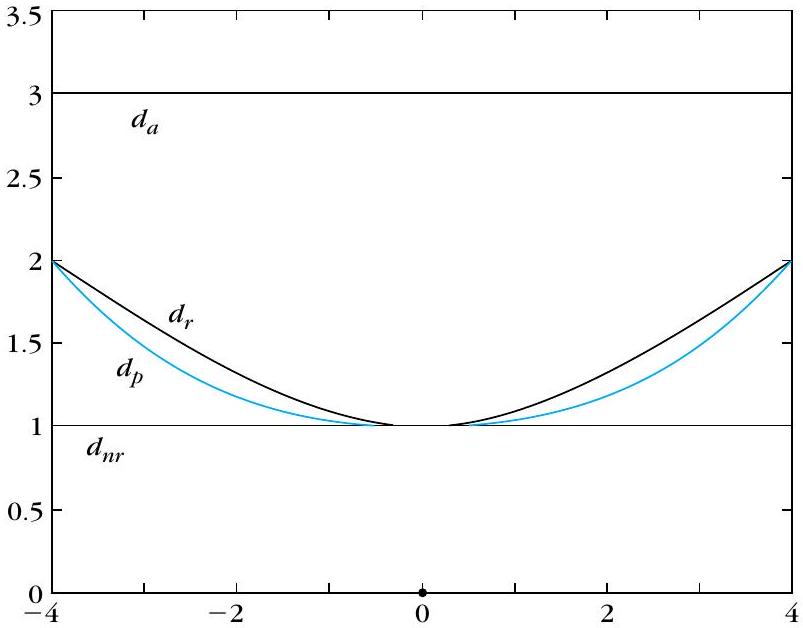
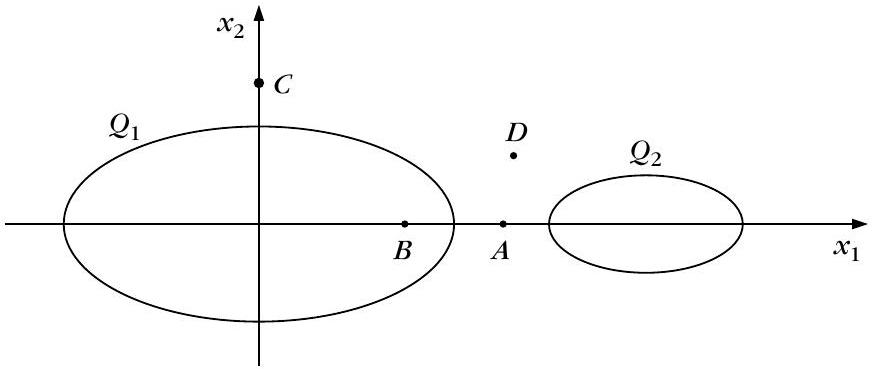
關於點到二次曲面的四種距離，下列何者最符合原文？
依例 14.6–14.7 與表 14.2，下列數字與現象何者正確？
殼狀模糊分群：AFCS／FCQS／MFCQS
▼一句話
殼狀叢集不是「一坨點」，而是橢圓／球殼或更一般的二次曲面；AFCS 用正規化徑向距離 $d_{nr}$ 去套超橢球殼，FCQS 改套一般二次曲面，MFCQS 則用垂直距離算隸屬、用 FCQS 的方式更新參數。
是什麼
前兩種演算法專門對付超橢球殼：第一個是 adaptive fuzzy $C$-shells（AFCS）[Dave 92a, Dave 92b]，第二個是 fuzzy C ellipsoidal shells（FCES）[Kris 95a]。後面的 FCQS／MFCQS 才把殼的形狀放寬成一般二次曲面。
AFCS用的是點到超橢球的平方正規化徑向距離 $d_{nr}$（式 14.49），代價函數（14.19）變成
$$ J_{nr}(\boldsymbol{\theta},U)=\sum_{i=1}^{N}\sum_{j=1}^{m}u_{ij}^{q}d_{nr}^{2}(\boldsymbol{x}_{i},Q_{j}) \tag{14.51} $$
第 $j$ 個代表是一顆橢圓（或超橢球），參數 $\boldsymbol{\theta}_{j}$ 包含中心 $\boldsymbol{c}_{j}$（$l$ 個參數）以及對稱正定矩陣 $A_{j}$ 的 $l(l+1)/2$ 個獨立元素。令
$$ \phi^{2}(\boldsymbol{x}_{i},\boldsymbol{\theta}_{j})=(\boldsymbol{x}_{i}-\boldsymbol{c}_{j})^{T}A_{j}(\boldsymbol{x}_{i}-\boldsymbol{c}_{j}) \tag{14.53} $$
則 $d_{nr}^{2}(\boldsymbol{x}_{i},\boldsymbol{\theta}_{j})=(\phi(\boldsymbol{x}_{i},\boldsymbol{\theta}_{j})-1)^{2}$。對 $d_{nr}^{2}$ 求梯度（式 14.52、14.54）再代回 GFAS 的（14.28），參數更新變成：解
$$ \sum_{i=1}^{N}u_{ij}^{q}(t-1)\frac{d_{nr}(\boldsymbol{x}_{i},\boldsymbol{\theta}_{j})}{\phi(\boldsymbol{x}_{i},\boldsymbol{\theta}_{j})}(\boldsymbol{x}_{i}-\boldsymbol{c}_{j})=\mathbf{0} $$ $$ \sum_{i=1}^{N}u_{ij}^{q}(t-1)\frac{d_{nr}(\boldsymbol{x}_{i},\boldsymbol{\theta}_{j})}{\phi(\boldsymbol{x}_{i},\boldsymbol{\theta}_{j})}(\boldsymbol{x}_{i}-\boldsymbol{c}_{j})(\boldsymbol{x}_{i}-\boldsymbol{c}_{j})^{T}=O $$
對 $\boldsymbol{c}_{j}$、$A_{j}$，再把解設成 $\boldsymbol{c}_{j}(t)$、$A_{j}(t)$。這組非線性方程通常要用迭代法解。對 $A_{j}$ 加約束的變體見 [Dave 92a, Dave 92b]。
例 14.8（Fig 14.11）：三個橢圓，中心 $\boldsymbol{c}_{1}=[0,0]^{T}$、$\boldsymbol{c}_{2}=[8,0]^{T}$、$\boldsymbol{c}_{3}=[1,1]^{T}$，軸向與定向由
$$ A_{1}=\begin{bmatrix}\frac{1}{16}&0\\0&\frac{1}{4}\end{bmatrix},\quad A_{2}=\begin{bmatrix}\frac{1}{4}&0\\0&1\end{bmatrix},\quad A_{3}=\begin{bmatrix}\frac{1}{8}&0\\0&\frac{1}{4}\end{bmatrix} $$
給出。每個橢圓生 100 個點，再對每個點加上座標來自 $[-0.5,0.5]$ 均勻分布的隨機向量。初值 $\boldsymbol{c}_{i}(0)=\boldsymbol{c}_{i}+\boldsymbol{z}$、$\boldsymbol{z}=[0.3,0.3]^{T}$；$A_{i}(0)=A_{i}+Z$，且 $Z$ 的元素全是 $0.2$。fuzzifier $q=2$。AFCS 四次迭代後得到 Fig 14.11b，橢圓已被近似辨識出來。
FCES改用平方徑向距離 $d_{r}$，代價是 $J_{r}$（14.55），更新式為（14.56）、（14.57）。它跟 AFCS 一樣只適合超橢球殼，只是距離從 $d_{nr}$ 換成 $d_{r}$。
FCQS（fuzzy C quadric shells）[Kris 95a, Frig 96] 要復原一般超二次曲面，用平方代數距離 $d_{a}$：
$$ J_{a}(\boldsymbol{\theta},U)=\sum_{i=1}^{N}\sum_{j=1}^{m}u_{ij}^{q}d_{a}^{2}(\boldsymbol{x}_{i},\boldsymbol{\theta}_{j})=\sum_{i=1}^{N}\sum_{j=1}^{m}u_{ij}^{q}\boldsymbol{p}_{j}^{T}M_{i}\boldsymbol{p}_{j} \tag{14.58} $$
其中 $\boldsymbol{p}_{j}$ 收進第 $j$ 個二次曲面的全部參數（$\boldsymbol{\theta}_{j}=\boldsymbol{p}_{j}$），$M_{i}=\boldsymbol{q}_{i}\boldsymbol{q}_{i}^{T}$（$\boldsymbol{q}_{i}$、$\boldsymbol{p}_{j}$ 見式 14.37、14.38）。直接對 $\boldsymbol{p}_{j}$ 最小化 $J_{a}$ 會得到全零的無聊解，所以必須對 $\boldsymbol{p}_{j}$ 加約束，不同約束就變成不同演算法。原文例子 [Kris 95a]：
- $\lVert\boldsymbol{p}_{j}\rVert^{2}=1$
- $\sum_{k=1}^{r+l}p_{jk}^{2}=1$
- $p_{j1}=1$
- $p_{js}^{2}=1$
- $\bigl\lVert\sum_{k=1}^{l}p_{jk}^{2}+0.5\sum_{k=l+1}^{r}p_{jk}^{2}\bigr\rVert^{2}=1$（Problem 14.12）
各有利弊：約束 (i)(ii) [Gnan 77, Pato 70] 不保持 $d_{a}$ 的平移／旋轉不變性，但能辨識平面叢集；約束 (iii) [Chen 89] 排除線性叢集，而且若 $X$ 裡的點近乎共面，結果會很差。
MFCQS（modified FCQS）：若改用點到二次曲面的平方垂直距離 $d_{p}$，因為 $d_{p}$ 很難估，對 $\boldsymbol{\theta}_{j}$ 最小化 $J_{p}$ 會變得非常複雜 [Kris 95a]。折衷作法是：隸屬度 $u_{ij}$ 用 $d_{p}$ 算，參數 $\boldsymbol{\theta}_{j}$ 仍用 FCQS 的更新（FCQS 裡 $\boldsymbol{\theta}_{i}=\boldsymbol{p}_{i}$）。這等於「誰比較靠近殼」看垂直距離，「殼的係數怎麼改」仍走代數距離。前提是代數距離與垂直距離要夠接近（Problem 14.13）。
另有 FCPQS（fuzzy C planoquadric shells）用代數距離的一階近似。能偵測球殼的模糊算法多半可看成套橢圓算法的特例 [Dave 92a, Kris 92a, Kris 92b, Man 94]。
為什麼
點代表（FCM）只會把資料收成「團」；殼狀資料（橢圓環、雙曲線、相交直線）需要「曲面當代表」。$d_{nr}$／$d_{r}$ 只對超橢球有清楚的幾何意義，所以 AFCS／FCES 走不進一般二次；$d_{a}$ 寫成 $\boldsymbol{p}^{T}M\boldsymbol{p}$ 後可以套任意二次，但零解與約束選擇會帶來平移／旋轉不變性、能不能抓直線等副作用。$d_{p}$ 直覺最好算起來卻最痛，MFCQS 才把「隸屬」與「參數更新」拆開。
怎麼用 / 怎麼記
- 對比口訣：AFCS（與 FCES）限橢圓／球殼——AFCS 用 $d_{nr}$、FCES 用 $d_{r}$；FCQS 允許一般二次、用 $d_{a}$，但要加 $\boldsymbol{p}_{j}$ 約束以免全零；MFCQS 用 $d_{p}$ 算隸屬、用 FCQS 更新參數，並要求 $d_{a}$ 與 $d_{p}$ 接近。
- AFCS 代表：中心 $\boldsymbol{c}_{j}$ $+$ 形狀矩陣 $A_{j}$（球殼可視為 $A_{j}$ 的特例）。
- 例 14.8 數字：三橢圓、每橢圓 100 點、均勻噪聲 $[-0.5,0.5]$、$q=2$、四次迭代（Fig 14.11b）。
- FCQS 約束：(i)(ii) 能抓平面但不保 $d_{a}$ 不變性；(iii) 排除直線且共面時會爛。
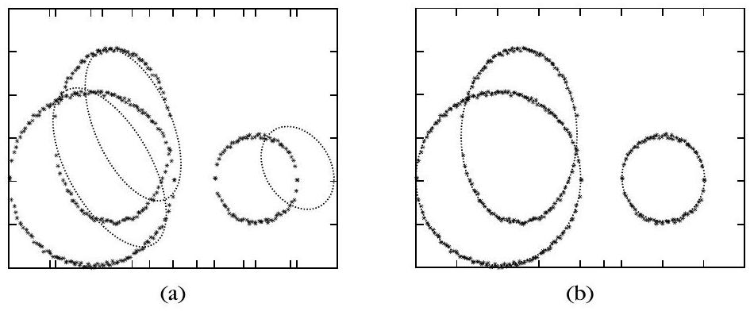
AFCS 的代價函數（14.51）採用哪一種點到超橢球的距離？
例 14.8 以 AFCS 套三個橢圓殼，下列哪一組與原文一致？
超平面代表：Gustafson–Kessel
▼一句話
線性／超平面叢集用 Gustafson–Kessel（G–K）距離 $d_{GK}$：每個叢集用中心 $\boldsymbol{c}_{j}$ 加共變矩陣 $\Sigma_{j}$ 當代表，距離是帶體積縮放的馬氏距離，對「平行於該平面的一條線」幾乎是常數。
是什麼
§14.3.3 討論如何復原超平面叢集 [Kris 92a]，常用在電腦視覺的曲面擬合：影像裡物體表面先用平面片去逼近。fuzzy c-varieties（FCV）[Ande 85] 最小化點到超平面的距離，但傾向找回非常長的叢集，共線的不同叢集可能被黏成一群。
G–K 算法 [Kris 92a, Kris 99a] 改以中心 $\boldsymbol{c}_{j}$ 與共變 $\Sigma_{j}$ 代表平面叢集，點 $\boldsymbol{x}$ 到第 $j$ 群的平方距離定義為縮放馬氏距離
$$ d_{GK}^{2}(\boldsymbol{x},\boldsymbol{\theta}_{j})=\lvert\Sigma_{j}\rvert^{1/l}(\boldsymbol{x}-\boldsymbol{c}_{j})^{T}\Sigma_{j}^{-1}(\boldsymbol{x}-\boldsymbol{c}_{j}) \tag{14.59} $$
其中 $\lvert\Sigma_{j}\rvert$ 是行列式。第 11 章的超平面距離 $d_{H}$ 有一個性質：落在與 $H$ 平行的超平面 $H_{1}$ 上的所有點，到 $H$ 的 $d_{H}$ 都相同。這是檢驗 $d_{GK}^{2}$ 好不好當「平面距離」的起點。
例 14.9（Fig 14.12）：單一叢集 $C$，點為 $[x_{i1},x_{i2}]^{T}$，其中 $x_{i1}=-2+0.1i$、$i=0,1,\ldots,40$（共 41 點），對應的 $x_{i2}$ 來自 $[-0.1,0.1]$ 均勻分布。再看線段 $u$：連接 $(-2,2)$ 與 $(2,2)$。Fig 14.12b 顯示 $u$ 上各點到 $C$ 的 $d_{GK}$ 幾乎一樣，相對差 $(\,d_{\max}-d_{\min}\,)/d_{\max}\approx 0.02$。較長的 $v_{1}$（連 $(-8,2)$ 與 $(8,2)$）與 $v_{2}$（連 $(-8,-2)$ 與 $(8,-2)$）變化較大，但相對差仍約 $0.12$。距離近乎常數 $\Rightarrow$ 適合直線叢集。
G–K 最小化
$$ J_{GK}(\boldsymbol{\theta},U)=\sum_{i=1}^{N}\sum_{j=1}^{m}u_{ij}^{q}d_{GK}^{2}(\boldsymbol{x}_{i},\boldsymbol{\theta}_{j}) \tag{14.60} $$
對 $\boldsymbol{c}_{j}$ 的梯度用到
$$ \frac{\partial d_{GK}^{2}(\boldsymbol{x}_{i},\boldsymbol{\theta}_{j})}{\partial\boldsymbol{c}_{j}}=-2\lvert\Sigma_{j}\rvert^{1/l}\Sigma_{j}^{-1}(\boldsymbol{x}_{i}-\boldsymbol{c}_{j}) \tag{14.62} $$
令 $\partial J_{GK}/\partial\boldsymbol{c}_{j}=\mathbf{0}$ 得到加權均值；對 $\Sigma_{j}$ 的元素微分（Problem 14.16）得到加權共變：
$$ \boldsymbol{c}_{j}=\frac{\sum_{i=1}^{N}u_{ij}^{q}\boldsymbol{x}_{i}}{\sum_{i=1}^{N}u_{ij}^{q}} \tag{14.63} $$ $$ \Sigma_{j}=\frac{\sum_{i=1}^{N}u_{ij}^{q}(\boldsymbol{x}_{i}-\boldsymbol{c}_{j})(\boldsymbol{x}_{i}-\boldsymbol{c}_{j})^{T}}{\sum_{i=1}^{N}u_{ij}^{q}} \tag{14.64} $$
代回 GFAS 的參數更新（注意共變用的是上一拍的中心 $\boldsymbol{c}_{j}(t-1)$）：
$$ \begin{aligned} \boldsymbol{c}_{j}(t)&=\frac{\sum_{i=1}^{N}u_{ij}^{q}(t-1)\boldsymbol{x}_{i}}{\sum_{i=1}^{N}u_{ij}^{q}(t-1)}\\ \Sigma_{j}(t)&=\frac{\sum_{i=1}^{N}u_{ij}^{q}(t-1)\bigl(\boldsymbol{x}_{i}-\boldsymbol{c}_{j}(t-1)\bigr)\bigl(\boldsymbol{x}_{i}-\boldsymbol{c}_{j}(t-1)\bigr)^{T}}{\sum_{i=1}^{N}u_{ij}^{q}(t-1)} \end{aligned} $$
例 14.10(a)（Fig 14.13）：三條線性叢集，各 41 點，分別落在 $x_{2}=x_{1}+1$、$x_{2}=0$、$x_{2}=-x_{1}+1$ 附近。$\boldsymbol{c}_{j}$ 隨機初始化，終止門檻 $\varepsilon=0.01$。G–K 26 次迭代後收斂，Fig 14.13b 顯示正確辨識 $X$ 底下的叢集。
例 14.10(b)（Fig 14.14）：第一、三叢集同上，第二叢集改為落在 $x_{2}=0.5$ 附近。任兩線的交點變得很近。G–K 38 次迭代後終止，Fig 14.14b 顯示未能正確辨識叢集。
為什麼
$d_{GK}$ 的 $\Sigma_{j}^{-1}$ 會把距離沿共變小的方向拉長、沿共變大的方向壓扁，等於自動把「薄薄一條」當成平面；前面的 $\lvert\Sigma_{j}\rvert^{1/l}$ 再把不同群的體積標尺對齊。所以平行於該平面的點，馬氏距離幾乎一樣——這就是例 14.9 相對差只有 $0.02$／$0.12$ 的原因。但交點擠在一起時（例 14.10b），共變適應會糊掉，G–K 就可能退化。
怎麼用 / 怎麼記
- 代表：$(\boldsymbol{c}_{j},\Sigma_{j})$，不是一條線的法向量，而是「中心 $+$ 扁長共變」。
- 距離：$d_{GK}^{2}=\lvert\Sigma_{j}\rvert^{1/l}\times$馬氏距離（14.59）。
- 更新：$\boldsymbol{c}_{j}$ 是 $u_{ij}^{q}$ 加權平均；$\Sigma_{j}$ 是加權共變，實作時用 $\boldsymbol{c}_{j}(t-1)$。
- 例 14.9：短線段 $u$ 相對差 $\approx 0.02$，長線段 $v_{1},v_{2}\approx 0.12$。
- 例 14.10：分離較好時 26 次成功；交點很近時 38 次仍失敗。
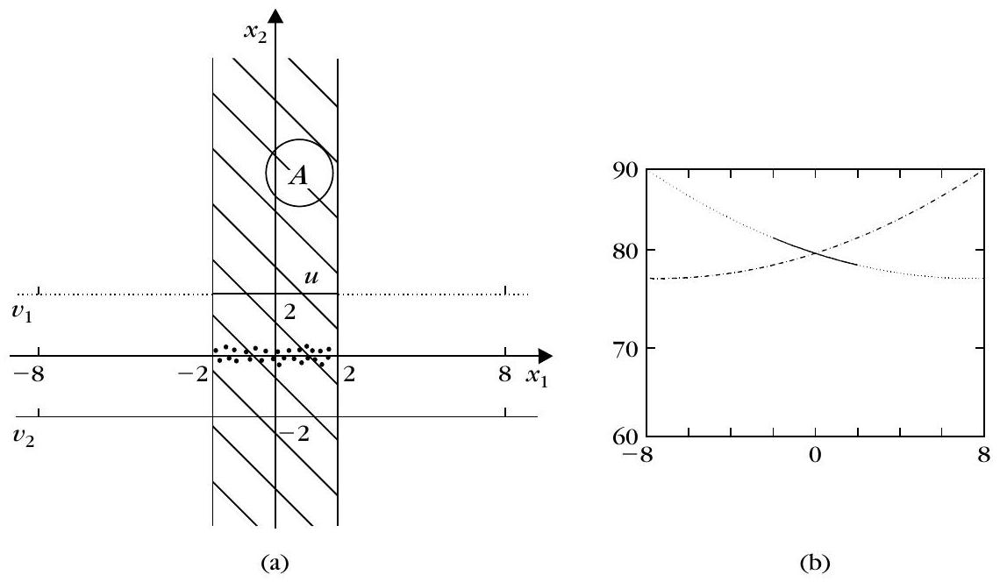
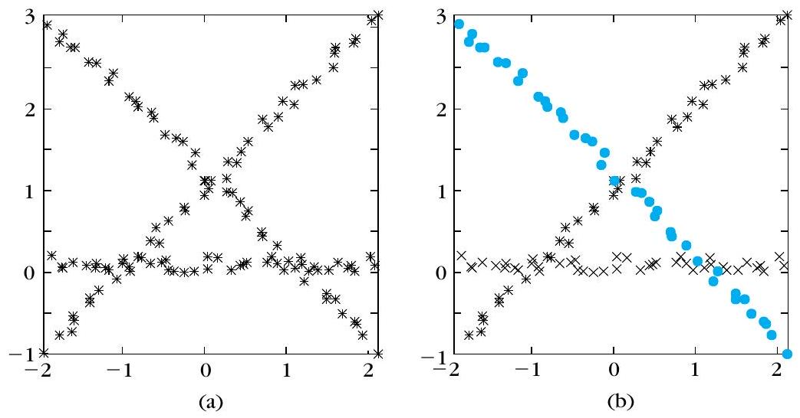
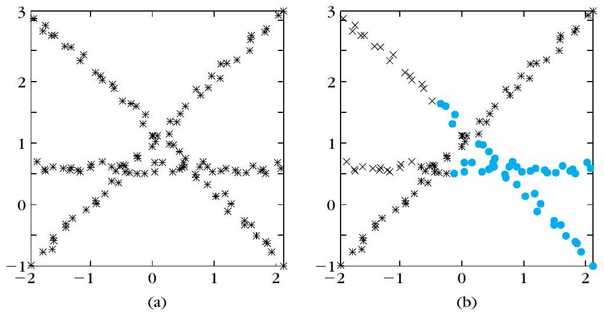
例 14.9 中，線段 $u$（連 $(-2,2)$ 與 $(2,2)$）與較長的 $v_{1},v_{2}$ 上，$d_{GK}$ 的相對差 $(\,d_{\max}-d_{\min}\,)/d_{\max}$ 約為多少？
例 14.10 以 G–K 套三條線性叢集（各 41 點，$\varepsilon=0.01$），結果為何？
幾何詮釋、FCM 收斂與 ACE
▼一句話
二次殼與超平面代表可以接力組合；模糊隸屬向量被釘在單純形上；FCM 在馬氏距離（或符合條件的距離）下有 Zangwill 式的駐點收斂；ACE 則放寬「必須最小化同一個 $J$」，隸屬函數可以自行指定。
是什麼
§14.3.4 組合（$l=2$）：資料裡若同時有二次殼與直線叢集，只跑套二次的算法會對不起直線，只跑套直線的算法會對不起橢圓／雙曲線。作法 [Kris 95a]：先對整個 $X$ 跑 FCQS。即使約束強迫代表是二次，FCQS 實務上仍可能用「極端二次」去貼直線——單一線→一對重合直線；兩相交線→雙曲線；兩平行線→很「扁」的雙曲線、或很長的橢圓、或一對直線。結束後若看到這些極端曲線，就強烈暗示 $X$ 含線性叢集。接著只把高隸屬於這些極端叢集的點放進 $X'$，再跑 G–K；初始化依形狀而定（重合線取其中一條；非扁雙曲線／相交線／平行線用漸近線或各線初始化兩個代表；極扁橢圓用短軸兩端切線；極扁雙曲線用兩頂點切線）。初始化很好時，G–K 往往幾步就能收到滿意解。
§14.3.5 幾何詮釋：論證類似 §14.2.2，只是 $u_{ij}$ 取代 $P(C_{j}\mid\boldsymbol{x}_{i})$。約束改寫成
$$ \sum_{j=1}^{m}u_{ij}=1,\quad i=1,\ldots,N \tag{14.65} $$
與 $\boldsymbol{x}_{i}$ 對應的向量 $\boldsymbol{y}=[u_{i1},u_{i2},\ldots,u_{im}]$ 被限制在超立方體 $H_{m}$ 裡、由（14.65）定義的超平面上（也就是單純形）。重做 §14.2.2 那些實驗，會得到關於離群點如何拖垮模糊算法的類似結論。[Mena 00] 的 fuzzy $c+2$ means 是 GFAS（點代表）的延伸，專門壓低離群點與叢集邊界點對代表估計的影響。
Fig 14.15(a)：一維隸屬函數 $u_{2}(x)$，由 GFAS 的（14.26）給出，參數 $\theta_{1}=5$、$\theta_{2}=3$、$\theta_{3}=8$，$q=2$，相異度 $d(x,\theta_{i})=\lvert x-\theta_{i}\rvert$。這條 $u_{2}(x)$ 既非凸、也不單調。Fig 14.15(b) 則是語言標籤「低／中／高」那種凸隸屬函數的例子。
§14.3.6 FCM 收斂：模糊分群雖由最小化（14.19）這類代價而來，收斂行為知道得不多。已證明 [Bezd 80, Hath 86]，用 Zangwill 的全域收斂定理 [Luen 84]：當使用馬氏距離（或 [Bezd 80] 討論的、滿足若干條件的其他距離）時，FCM 產生的迭代序列要嘛有限步收到代價函數的駐點，要嘛至少有一個子序列收到駐點。該點可以是局部（或全域）最佳，也可以是鞍點。判別收斂點性質的檢定見 [Isma 86, Hath 86, Kim 88]。較新的 [Grol 05] 進一步證明 FCM 序列會收到代價函數的駐點。數值收斂議題見 [Bezd 92]。
§14.3.7 ACE（alternating cluster estimation）[Runk 99, Hopp 99]：GFAS 裡由（14.26）決定的隸屬函數 $u_{j}(\boldsymbol{x}_{i})$ 既非凸也不單調（Fig 14.15a）。模糊規則系統卻常要求凸隸屬——「低、中、高」長得像 Fig 14.15b。這時可以先指定一種隸屬函數，再用 GFAS 那種交替更新去估 $u_{ij}$ 與 $\boldsymbol{\theta}_{j}$。GFAS 可視為 ACE 的特例。顯然，此時得到的解不一定對應某個最佳化準則。
為什麼
組合段解決「一種代表無法同時伺候曲線與直線」。幾何段提醒：列和 $=1$ 把 $\boldsymbol{y}$ 釘在單純形上，一群的隸屬會被其他群牽制，離群點的效應與 §14.2.2 同款。收斂段把「交替更新看起來會停」講成定理：停在駐點，不保證全域最小。ACE 則承認：實務上有時寧願隸屬函數長得像語言標籤，也不堅持它必須來自同一個 $J$。
怎麼用 / 怎麼記
- 14.3.4：先 FCQS 抓極端二次 $\rightarrow$ 再對那些點跑 G–K。
- 單純形：$\boldsymbol{y}$ 在 $H_{m}$ 裡被（14.65）釘住，對比 §14.2.2 的後驗向量。
- Fig 14.15：(a) $u_{2}(x)$、（14.26）、$\theta_{1}=5,\theta_{2}=3,\theta_{3}=8$、$q=2$、$d=\lvert x-\theta_{i}\rvert$；(b) 低／中／高。
- FCM 收斂：Zangwill；馬氏（或合格距離）；有限步到駐點，或子序列到駐點；可能是鞍點。
- ACE：隸屬函數可自選；解不必來自同一個 $J$ 的最小化。
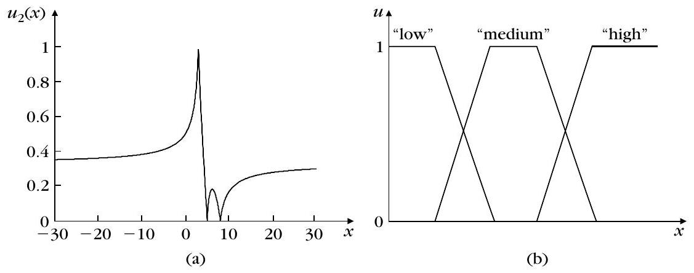
Fig 14.15(a) 畫的是式 (14.26) 的一維隸屬 $u_{2}(x)$。原文參數為何？
關於 FCM 收斂（§14.3.6）與 ACE（§14.3.7），下列哪一項符合原文？
可能分群：列和不必 1，$\eta$ 與 $q$
▼一句話
可能分群拿掉「每一列隸屬加總必須 $=1$」：$u_{ij}$ 只量「這點跟第 $j$ 個代表有多合拍」，跟其他群無關；為了避免全 0，再加一項 $\eta_{j}\sum_{i}(1-u_{ij})^{q}$，$\eta_{j}$ 就是 $u_{ij}=0.5$ 時的相異度。
是什麼
本節算法放寬（14.17）、（14.65）這類列和約束 [Kris 93, Kris 96]（模糊版同一約束是 14.20）。用 §14.3.5 的語言：向量 $\boldsymbol{y}$（座標就是各 $u_{ij}$）可以在超立方體 $H_{m}$ 裡到處走，不必再躺在單純形上：
$$ u_{ij}\in[0,1],\qquad \max_{j=1,\ldots,m}u_{ij}\gt 0,\quad i=1,\ldots,N $$ $$ 0\lt \sum_{i=1}^{N}u_{ij}\le N,\quad j=1,\ldots,m \tag{14.66} $$
這改變了 $u_{ij}$ 的意思。模糊框架裡 $u_{ij}$ 是 $\boldsymbol{x}_{i}$ 屬於第 $j$ 群的隸屬程度；這裡 $u_{ij}$ 是 $\boldsymbol{x}_{i}$ 與第 $j$ 個代表的相容程度，或依 [Zade 78] 是 $\boldsymbol{x}_{i}$ 屬於第 $j$ 群的可能性。重點：這個可能性只取決於 $\boldsymbol{x}_{i}$ 與第 $j$ 個代表，與它屬於其他群的可能性無關。
代價仍從
$$ J(\boldsymbol{\theta},U)=\sum_{i=1}^{N}\sum_{j=1}^{m}u_{ij}^{q}d(\boldsymbol{x}_{i},\boldsymbol{\theta}_{j}) \tag{14.67} $$
出發。直接對 $U$ 最小化會得到全 0 的無聊解。必須再加一項只跟 $u_{ij}$ 有關的 $f(U)$，並（延續 §14.2.2 的討論）讓它壓低離群點的影響。一個選擇是
$$ f(U)=\sum_{j=1}^{m}\eta_{j}\sum_{i=1}^{N}(1-u_{ij})^{q} \tag{14.68} $$
於是
$$ J(\boldsymbol{\theta},U)=\sum_{i=1}^{N}\sum_{j=1}^{m}u_{ij}^{q}d(\boldsymbol{x}_{i},\boldsymbol{\theta}_{j})+\sum_{j=1}^{m}\eta_{j}\sum_{i=1}^{N}(1-u_{ij})^{q} \tag{14.69} $$
$\eta_{j}$ 是適當選的正常數。對 $u_{ij}$ 令 $\partial J/\partial u_{ij}=0$ 得到
$$ u_{ij}=\frac{1}{1+\bigl(d(\boldsymbol{x}_{i},\boldsymbol{\theta}_{j})/\eta_{j}\bigr)^{1/(q-1)}} \tag{14.70} $$
$u_{ij}$ 與「$\boldsymbol{x}_{i}$ 和第 $j$ 代表的相異度」成反比。直覺：$u_{ij}$ 表示第 $j$ 個代表要被「拉開」多少才能對上 $\boldsymbol{x}_{i}$；大 $u_{ij}$ 表示幾乎不用拉。對固定的 $\boldsymbol{x}_{i}$，這種拉開可以對各群獨立進行。
（14.69）第二項的作用現在很清楚：它降低離群點對 $\boldsymbol{\theta}_{j}$ 估計的影響——相異度大 $\Rightarrow$ $u_{ij}$ 小 $\Rightarrow$ 對控制 $\boldsymbol{\theta}_{j}$ 的第一項幾乎沒貢獻。第二項不含代表參數，所以可能分群更新 $\boldsymbol{\theta}_{j}$ 的方式，與對應的模糊算法完全相同。
廣義可能算法 GPAS：先固定各 $\eta_{j}$、選 $\boldsymbol{\theta}_{j}(0)$；每步用（14.70）更新全部 $u_{ij}(t)$，再對每個 $j$ 解
$$ \sum_{i=1}^{N}u_{ij}^{q}(t-1)\frac{\partial d(\boldsymbol{x}_{i},\boldsymbol{\theta}_{j})}{\partial\boldsymbol{\theta}_{j}}=\mathbf{0} \tag{14.71} $$
得到 $\boldsymbol{\theta}_{j}(t)$，直到例如 $\lVert\boldsymbol{\theta}(t)-\boldsymbol{\theta}(t-1)\rVert\lt \varepsilon$。上一節每個模糊算法都可以這樣改成可能版本。
因為各 $u_{ij}$（$j=1,\ldots,m$）彼此獨立，可寫 $J=\sum_{j}J_{j}$，
$$ J_{j}=\sum_{i=1}^{N}u_{ij}^{q}d(\boldsymbol{x}_{i},\boldsymbol{\theta}_{j})+\eta_{j}\sum_{i=1}^{N}(1-u_{ij})^{q} \tag{14.72} $$
最小化可對每個 $J_{j}$ 分開做。$\eta_{j}$ 決定（14.72）兩項的相對重要性，並與第 $j$ 群的大小、形狀有關。由 Fig 14.16 可見：$\eta_{j}$ 就是 $u_{ij}=0.5$ 時，$\boldsymbol{x}_{i}$ 與 $\boldsymbol{\theta}_{j}$ 的相異度（$d=\eta_{j}$ 代入 14.70 得 $u=1/2$）。執行期間通常把 $\eta_{j}$ 當常數。若 $X$ 沒有太多離群點，可先跑 GFAS，收斂後用加權平均估 $\eta_{j}$ [Kris 96]：
$$ \eta_{j}=\frac{\sum_{i=1}^{N}u_{ij}^{q}d(\boldsymbol{x}_{i},\boldsymbol{\theta}_{j})}{\sum_{i=1}^{N}u_{ij}^{q}} \tag{14.73} $$
或只對 $u_{ij}\gt a$ 的點取平均（14.74）。
Fig 14.16：把 $u_{ij}$ 對 $d(\boldsymbol{x}_{i},\boldsymbol{\theta}_{j})/\eta_{j}$ 畫出來、換不同 $q$（式 14.70）。$q$ 決定 $u_{ij}$ 隨距離下降的速度。$q=1$ 時，所有 $d(\boldsymbol{x}_{i},\boldsymbol{\theta}_{j})\gt \eta_{j}$ 的點都有 $u_{ij}=0$。另一方面，$q\to+\infty$ 時 $u_{ij}$ 趨近常數， $X$ 裡所有向量對第 $j$ 個代表的估計同等貢獻。
$q$ 在可能框架與模糊框架的意義不同：可能裡，大 $q$ 表示所有特徵向量對所有叢集幾乎同等貢獻；模糊裡，大 $q$ 表示向量被各叢集分享得更厲害 [Kris 96]。因此兩種框架要得到像樣結果，通常需要不同的 $q$。
為什麼
列和 $=1$ 會讓「屬於 A 的程度」被「屬於 B 的程度」綁住——離群點也得把隸屬分給某幾群。拿掉列和之後，離群點可以對每一群都說「我不太屬於你」（$u$ 全很小）。若只留 $\sum u^{q}d$，最小值在全 0，所以要第二項把 $u$ 往 1 推；兩股力量在 $d=\eta_{j}$ 時打平到 $u=0.5$。離群點 $d$ 大 $\rightarrow$ $u$ 小 $\rightarrow$ 幾乎不拉代表，這就是可能分群比較扛得住離群點的原因。
怎麼用 / 怎麼記
- 約束：丟掉（14.17）／（14.20）／（14.65）的列和 $=1$；$u_{ij}\in[0,1]$，每列至少一個正值，每行 $0\lt \sum_{i}u_{ij}\le N$（14.66）。
- 口訣：$u_{ij}$ 只看「這點 vs 這代表」，別群插不進來。
- 式 (14.70)：$d=\eta_{j}\Rightarrow u_{ij}=0.5$；$d$ 愈大 $u$ 愈小。
- Fig 14.16：$q=1$ 時 $d\gt \eta_{j}\Rightarrow u=0$；$q\to\infty$ 時 $u$ 趨近常數。
- $q$ 的兩個意思：可能＝大家對所有群貢獻幾乎相等；模糊＝點被各群分享更厲害。
- GPAS：$\boldsymbol{\theta}_{j}$ 更新與對應模糊算法相同（第二項不含 $\boldsymbol{\theta}$）；離群點幾乎不拉代表。
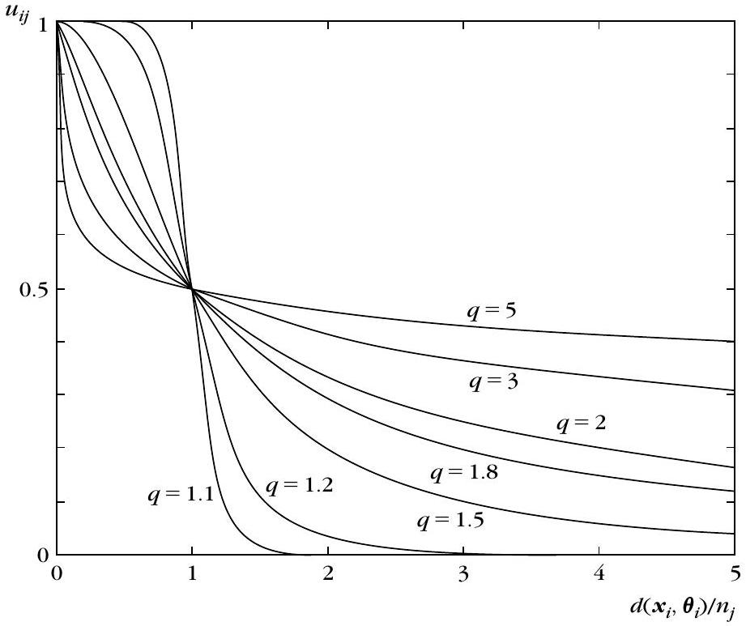
可能分群的隸屬（14.70）與 $\eta_{j}$ 的意義，下列哪一項正確？
Fig 14.16 與 $q$ 在可能／模糊框架的差異，原文怎麼說？
尋模：GPAS 會往密度高處走
▼🤖 AI 生圖可用：重繪此示意圖的提示詞（結構化）
# AI 生圖提示詞 — kp-13 尋模 GPAS：往密度峰走，多的會重合
## WHAT
畫一張幾何示意圖：平面上有三座密度峰（對應例 14.11 三個二維高斯），四個代表點（空心起點 → 實心終點）沿箭頭往峰頂爬。其中兩支箭頭匯入同一座左下峰，終點幾乎疊在一起並標「多的會重合」；另外兩支各自登上另兩座峰。可在角落用小對照條對比 partition「必須填滿 m 格」vs 尋模「多了就擠同一峰」。
## WHY
要傳達的因果與反直覺：GPAS 是 mode-seeking——代表往資料密處走，不是硬湊 m 群。m 設太多不會「多出新峰」，多餘代表會撞上同一座峰（例 14.11：m=4 時 θ1≈[0.93,0.60]、θ4≈[0.94,0.60]）。讀者遮住文字後仍應看出「多箭頭往峰、兩箭頭匯合」。
## MUST show
- 2–3 個可見密度峰（橢圓/點雲漸密），位置精神對齊 μ1≈(1,1)、μ2≈(6,1)、μ3≈(6,6)。
- 多支箭頭／代表點往峰走；至少兩代表 converging 到同一峰。
- 明確標「多的會重合」（或等價繁中）。
- 可標 m=4、k=3、例 14.11 精神；不要塞 LaTeX $。
- 文字用繁中；用 svg-panel，不要 class="card"。
## AVOID
- 不要畫成名詞連連看（方框串「GPAS」「mode」「partition」）。
- 不要放數學公式或 $J_j$、$u_{ij}$ 這類符號。
- 不要讓四個代表各自佔一座「虛構第四峰」。
- 不要外鏈字體；不要用 class="card"。
## STYLE
扁平教學示意，主題色 sky #0284c7 / #0369a3，背景 #f0f9ff，峰區淡藍漸層，匯合處用強調色（如 #dc2626）標重合，圓角 svg-panel，繁中標籤，幾何／軌跡承載因果。一句話
GMDAS、GFAS 是 partition 算法：你指定 $m$ 群，它就一定吐出 $m$ 群；GPAS 則是 mode-seeking（尋模）——代表點會往資料密度高的地方走，多出來的代表還可能自己重合。
是什麼
廣義混合分解方案 GMDAS 與廣義模糊方案 GFAS 都屬於 partition（分割）型：不管 $X$ 裡真正有幾團「自然叢集」，最後一定交出事先指定的 $m$ 群。例如 $X$ 其實只有兩團，你卻用 $m=3$ 去跑，它們至少會把其中一團拆開，硬湊出三群。
廣義可能方案 GPAS 不是這種脾氣。這類算法被稱為 mode-seeking：去找 $X$ 裡向量密集的區域。回頭看各群自己的代價 $J_j$。把式 (14.70) 對 $d(\boldsymbol{x}_i,\boldsymbol{\theta}_j)$ 解出來，得到
$$ d(\boldsymbol{x}_i,\boldsymbol{\theta}_j)=\eta_j\left(\frac{1-u_{ij}}{u_{ij}}\right)^{q-1} $$
再代回式 (14.72)，就得到
$$ \begin{equation*} J_j=\eta_j\sum_{i=1}^{N}(1-u_{ij})^{q-1} \tag{14.75} \end{equation*} $$
$\eta_j$ 固定時，要讓 $J_j$ 變小，就得讓 $u_{ij}$ 變大；要讓 $u$ 變大，就得讓 $d(\boldsymbol{x}_i,\boldsymbol{\theta}_j)$ 變小——最後一步等於要求 $\boldsymbol{\theta}_j$ 待在 $X$ 向量很密的地方。這就是「往密度高處走」。
尋模性質帶來一個實務好處：不必事先精確知道自然團數 $k$。
- 若跑 $m$ 群而 $X$ 只有 $k$ 個自然團，且 $m\gt k$，初始化得當的話，多出來的代表會跟別的代表重合 [Kris 96]。希望不重合的那幾團剛好等於 $k$。
- 若 $m\lt k$，初始化得當的話，有機會找到 $m$ 個不同的團——當然不是全部自然團，但至少是其中 $m$ 個 [Kris 96]。
例 14.11 專門示範尋模。三個二維高斯：$\boldsymbol{\mu}_1=[1,1]^{T}$、$\boldsymbol{\mu}_2=[6,1]^{T}$、$\boldsymbol{\mu}_3=[6,6]^{T}$，共變異數 $\Sigma_j=I$（$j=1,2,3$），各抽 100 點組成 $X$。取 $q=1.5$，距離用平方歐氏。在這個選擇下，式 (14.71) 剛好變成 FCM 那種加權均值更新：
$$ \begin{equation*} \boldsymbol{\theta}_j(t)=\frac{\sum_{i=1}^{N}u_{ij}^{q}(t-1)\boldsymbol{x}_i}{\sum_{i=1}^{N}u_{ij}^{q}(t-1)} \tag{14.76} \end{equation*} $$
各群都設 $\eta_j=1.5$。
- $m=3$：初始化 $\boldsymbol{\theta}_j(0)=\boldsymbol{\mu}_j+\boldsymbol{z}_j$，其中 $\boldsymbol{z}_j$ 的分量從 $[-2,2]$ 均勻抽取。GPAS 把每個 $\boldsymbol{\theta}_j$ 推向各分布的均值（也就是密處）。12 次迭代後：$\boldsymbol{\theta}_1=[0.93,0.60]^{T}$、$\boldsymbol{\theta}_2=[5.88,1.12]^{T}$、$\boldsymbol{\theta}_3=[6.25,5.86]^{T}$，跟 $\boldsymbol{\mu}_j$ 對得很漂亮。
- $m=4$：前三個初始化同上，$\boldsymbol{\theta}_4$ 設成 $\boldsymbol{\mu}_1+\boldsymbol{z}_4$（故意放在第一團附近）。結果 $\boldsymbol{\theta}_1$ 與 $\boldsymbol{\theta}_4$ 都走向第一團的密處，$\boldsymbol{\theta}_2$、$\boldsymbol{\theta}_3$ 分別走向第二、第三團。12 次迭代後前三個與 (a) 相同，且 $\boldsymbol{\theta}_4=[0.94,0.60]^{T}$——幾乎與 $\boldsymbol{\theta}_1=[0.93,0.60]^{T}$ 重合。
- $m=2$：$\boldsymbol{\theta}_1$、$\boldsymbol{\theta}_2$ 初始化同 (a)。11 次迭代後只找到第一、第二團：$\boldsymbol{\theta}_1=[0.93,0.60]^{T}$、$\boldsymbol{\theta}_2=[5.88,1.12]^{T}$。
§14.4.2 另外給了一個替代的可能方案：代價改成式 (14.77)，$q$ 不再出現，隸屬度變成 $u_{ij}=\exp\bigl(-d(\boldsymbol{x}_i,\boldsymbol{\theta}_j)/\eta_j\bigr)$（14.78）——同樣距離下 $u$ 掉得比 (14.70) 更快，適合預期各團靠得比較近、需要更用力「撐開」的情況。
為什麼
Partition 算法把「群數 $m$」當成必須填滿的格子，多指定就拆自然團、少指定就硬併。尋模算法問的是「密度峰在哪」，所以 $m$ 設太大時多餘的峰會疊在一起，設太小時至少還能抓住其中幾個峰——前提是初始化別太離譜。例 14.11 把這件事講死：四個代表塞進三個高斯，多的那個會跟第一團的代表幾乎變成同一個點。
怎麼用 / 怎麼記
- 口訣：GMDAS／GFAS 是 partition（指定 $m$ 就吐 $m$ 群）；GPAS 是尋模（往密處走）。
- 式 (14.75)：固定 $\eta_j$ 時，$\min J_j\Rightarrow\max u\Rightarrow\min d\Rightarrow\boldsymbol{\theta}_j$ 放在密處。
- $m$ 與 $k$：$m\gt k$ 多餘代表會重合；$m\lt k$ 至少找到其中 $m$ 個自然團（初始化要好）。
- 例 14.11：$q=1.5$、平方歐氏、更新同 FCM (14.76)、$\eta_j=1.5$。(a) $m=3$ 對上三個均值；(b) $m=4$ 時 $\boldsymbol{\theta}_1$ 與 $\boldsymbol{\theta}_4$ 幾乎重合；(c) $m=2$ 只抓到第一、第二團。
關於 GMDAS／GFAS 與 GPAS，下列哪一項最符合原文？
例 14.11 以 $q=1.5$、平方歐氏、$\eta_j=1.5$ 跑 GPAS，下列敘述何者正確？
硬分群與 isodata／$k$-means
▼一句話
硬分群是模糊的特例：每點只屬一群。最有名的 isodata（也叫 $k$-means、$c$-means）用點代表加平方歐氏，把 $J$ 收成群內散布矩陣的 trace，代表就是該群均值。
是什麼
這一節回到「每個向量只屬於單一叢集」的世界，所以叫 hard 或 crisp clustering。隸屬係數只能是 0 或 1，而且對每個 $\boldsymbol{x}_i$ 恰好有一個叢集是 1：
$$ \begin{equation*} u_{ij}\in\{0,1\},\quad j=1,\ldots,m \tag{14.79} \end{equation*} $$ $$ \begin{equation*} \sum_{j=1}^{m}u_{ij}=1 \tag{14.80} \end{equation*} $$
這可以看成模糊方案的特例。代價仍寫成
$$ \begin{equation*} J(\boldsymbol{\theta},U)=\sum_{i=1}^{N}\sum_{j=1}^{m}u_{ij}\,d(\boldsymbol{x}_i,\boldsymbol{\theta}_j) \tag{14.81} \end{equation*} $$
但 $J$ 對 $\boldsymbol{\theta}_j$ 不再可微。儘管如此，廣義模糊方案的骨架還是能搬過來：先固定代表，把每點指到最近的那一群（14.82）；再固定 $U$，用
$$ \begin{equation*} \sum_{i=1}^{N}u_{ij}\frac{\partial d(\boldsymbol{x}_i,\boldsymbol{\theta}_j)}{\partial\boldsymbol{\theta}_j}=\mathbf{0} \tag{14.83} \end{equation*} $$
更新參數。這就是廣義硬分群方案 GHAS。每種硬分群都有對應的模糊版；硬分群的參數更新，就是把模糊對應式裡的 $q$ 設成 $1$。
原文也提醒：若代表不是點（例如超平面、G-K），硬分群沒有模糊版那麼穩健，樣本不夠時共變異數可能不可逆 [Kris 92a]。另外，「先優化 $U$、再優化 $\theta$」這兩步交替，不保證走到 $J(\boldsymbol{\theta},U)$ 的（局部）最佳。
Isodata／$k$-means／$c$-means [Duda 01, Ball 67, Lloy 82] 是 GHAS 在「點代表 + 平方歐氏」下的特例。此時
$$ \begin{equation*} J(\boldsymbol{\theta},U)=\sum_{i=1}^{N}\sum_{j=1}^{m}u_{ij}\lVert\boldsymbol{x}_i-\boldsymbol{\theta}_j\rVert^{2} \tag{14.85} \end{equation*} $$
這正好是第 5 章群內散布矩陣 $S_w$ 的 trace：
$$ \begin{equation*} J(\theta,U)=\operatorname{trace}\{S_w\} \tag{14.86} \end{equation*} $$
對這個距離，式 (14.83) 給出 $\boldsymbol{\theta}_j$＝第 $j$ 群的均值。套 GHAS 後，算法會收到代價函數的一個最小——也就是盡量挖出「緊密」的團。但這條收斂到 $J$ 最小的結論，不能原封不動搬到別的距離（連歐氏本身也不行）。例如改用 Minkowski 距離，算法會收斂，但不一定收到對應代價的最小 [Seli 84a]。
演算法本身很直白：
- 任意初始化 $\boldsymbol{\theta}_j(0)$，$j=1,\ldots,m$。
- 對每個 $\boldsymbol{x}_i$，找到最近的代表，記 $b(i)=j$。
- 把 $\boldsymbol{\theta}_j$ 改成所有 $b(i)=j$ 那些點的均值。
- 直到連續兩次迭代 $\boldsymbol{\theta}_j$ 都不再變。
另有序列版：每處理完一個 $\boldsymbol{x}_i$ 立刻更新代表 [Pena 99]，結果會跟點被處理的順序有關。也有版本事先把各群人數鎖成 $n_i$ [Ng 00]。
例 14.12(a) 沿用例 14.1(a) 的三團二維高斯（$\boldsymbol{\mu}_1=[1,1]^{T}$、$\boldsymbol{\mu}_2=[3.5,3.5]^{T}$、$\boldsymbol{\mu}_3=[6,1]^{T}$，各 100 點）。設 $m=3$、隨機初始化。收斂後成功找回底層叢集，混淆矩陣為
$$ A=\begin{bmatrix}94&3&3\\0&100&0\\9&0&91\end{bmatrix} $$
代表為 $\boldsymbol{\theta}_1=[1.19,1.16]^{T}$、$\boldsymbol{\theta}_2=[3.76,3.63]^{T}$、$\boldsymbol{\theta}_3=[5.93,0.55]^{T}$。
例 14.12(b) 換成兩個高斯：$\boldsymbol{\mu}_1=[1,1]^{T}$、$\boldsymbol{\mu}_2=[8,1]^{T}$，$\Sigma_1=1.5I$、$\Sigma_2=I$；第一團抽 300 點、第二團只抽 10 點（圖 14.17a）。設 $m=2$、隨機初始化。收斂後大團被切開，右側那一塊還跟那 10 點併成同一群（圖 14.17b）：$\boldsymbol{\theta}_1=[0.54,0.94]^{T}$、$\boldsymbol{\theta}_2=[3.53,0.99]^{T}$，第一團有 61 個向量被派去跟第二團的 10 點同群。這暴露一個弱點：各群大小差很多時，$k$-means 容易切錯。
時間複雜度是 $O(Nmq)$，其中 $q$ 是收斂所需迭代次數。實務上 $m$、$q$ 都遠小於 $N$，所以能跑大資料。概念也簡單，後人因此寫了很多變體來補洞。主要限制如下：
- 局部最小：不同初始化可能走到不同的 $J$ 局部最小。可用 $X$ 裡隨機抽點 [Forg 65]、第 12 章序列算法、或先隨機切成 $m$ 份再取均值當初始；也可跑很多次 [Kauf 90, Pena 99, Brad 98]。隨機最佳化（模擬退火、遺傳算法）理論上能以機率找到全局最小，但計算很貴 [Kris 99, Pata 01]。求最佳分割是 NP-hard，不過已有可證明的近似算法 [Indy 99, Kuma 04, Kanu 04]。
- 要先知 $m$：估錯就挖不出真正結構。有些變體用切分／合併／丟棄 [Ande 73]，但那就不再是單純最佳化。也可改走 §12.3，用序列分群估 $m$。
- 對離群點敏感：離群點也必須被派進某一群，會拉歪該群均值。小群常常是離群點結成的，[Ball 67] 的版本直接丟掉「很小」的群。這個缺點也催生了下一節的 $k$-medoids。
- 原則上要連續特徵：名義（類別）座標不適合；離散域有專門變體 [Huan 98, Gupa 99]，或改用 $k$-medoids。也有核化版本 [Scho 98, Giro 02]。
為什麼
硬分群把「非 0 即 1」講死，更新公式就從模糊版令 $q=1$ 得到。平方歐氏讓 $J$ 變成 $\operatorname{trace}(S_w)$，幾何意義就是「群內愈緊愈好」，所以代表會停在均值。例 14.12(b) 提醒：代價只看平方距離總和，大團裡的「遠一點」也可能比小團的全部點更划算被切開——大小失衡時切法會騙人。$O(Nmq)$ 解釋了它為什麼能當大資料的第一個候選，也解釋了為什麼離群點、錯誤的 $m$、糟糕的初始化都得另外想辦法。
怎麼用 / 怎麼記
- 口訣：硬分群＝每點一群；$q=1$ 從模糊對應式來；isodata＝$k$-means＝$c$-means。
- 三步循環：任意初始化 → 每點指到最近代表 → 代表改成該群均值 → 直到 $\theta$ 不變。
- 式 (14.85)(14.86)：平方歐氏 $J=\operatorname{trace}(S_w)$，$\boldsymbol{\theta}_j$＝該群均值；此距離保證收到 $J$ 的最小。Minkowski 會收斂，但不一定是 $J$ 最小 [Seli 84a]。
- 序列版：每處理一點就更新，結果跟點的順序有關。
- 例 14.12：(a) 混淆矩陣第一列 $94,3,3$，代表約 $[1.19,1.16]^{T}$ 等；(b) 300 vs 10 點、$m=2$ 把大團切開，61+10 併一群。
- 複雜度：$O(Nmq)$。優點是簡單、能跑大資料；缺點是局部最小、要先知 $m$、怕離群點、原則上要連續特徵。初始化可借第 12 章序列算法；小群可當離群丟掉。
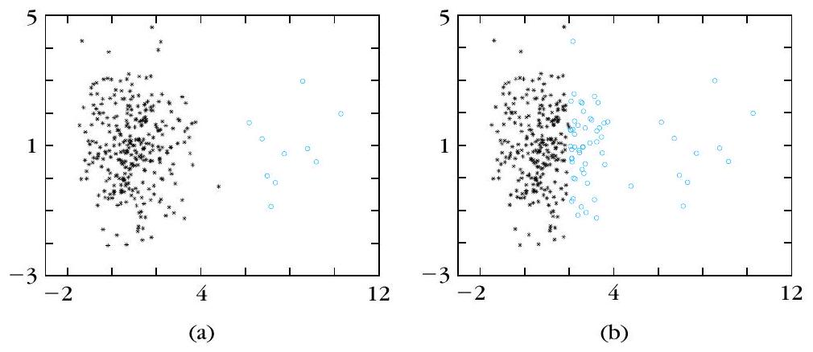
isodata／$k$-means 採用點代表與平方歐氏時，原文對代價 $J$ 與收斂的說法何者正確？
關於例 14.12 與 $k$-means 的複雜度／弱點，下列何者正確？
$k$-medoids：PAM、CLARA、CLARANS
▼一句話
$k$-medoids 規定代表必須是 $X$ 裡的某個點（medoid）。好處是離散域也合用、離群點幾乎拽不動代表；代價是幾何意義較弱、算得比較貴。PAM 精、CLARA 抽樣、CLARANS 隨機看鄰居。
是什麼
$k$-means 用群內均值當代表；$k$-medoids 改從 $X$ 的元素裡挑一個當代表，叫做 medoid。每一群除了自己的 medoid，還包含：(a) 沒有當別群 medoid 的點，且 (b) 離自己的 medoid 比離其他 medoid 更近的點。
令 $\Theta$ 為所有 medoid 的集合，$I_{\Theta}$ 是這些點在 $X$ 裡的指標，$I_{X-\Theta}$ 是「不是 medoid」那些點的指標。例如 $\Theta=\{\boldsymbol{x}_1,\boldsymbol{x}_5,\boldsymbol{x}_{13}\}$ 則 $I_{\Theta}=\{1,5,13\}$。這組代表好不好，用
$$ \begin{equation*} J(\Theta,U)=\sum_{i\in I_{X-\Theta}}\sum_{j\in I_{\Theta}}u_{ij}\,d(\boldsymbol{x}_i,\boldsymbol{x}_j) \tag{14.87} \end{equation*} $$
衡量，其中 $u_{ij}=1$ 當且僅當 $\boldsymbol{x}_j$ 是 $\boldsymbol{x}_i$ 最近的那個 medoid（14.88）。式 (14.87) 幾乎就是 (14.81)，差別只是 $\boldsymbol{\theta}_j$ 被換成 $X$ 裡的 $\boldsymbol{x}_j$。
用 medoid 當代表有兩項優點：
- 離散域也行：$k$-means 適合連續域；離散域裡一堆點的均值不一定還落在資料所在的格子裡（圖 14.18a：均值標成「+」，根本不在 $\mathcal{D}$ 上，圈起來的才是 medoid）。
- 比較不怕離群點：圖 14.18b 的 $(9,2)$ 可看成離群點，它會明顯拉開均值，但幾乎不動 medoid 的位置。
缺點是：均值有清楚的幾何與統計意義，medoid 不一定有；而且找最佳 medoid 集合比 $k$-means 更吃計算。
先定義鄰居：兩個都含 $m$ 個 medoid 的集合 $\Theta$、$\Theta'$，若共享 $m-1$ 個元素，就互稱鄰居。一個 $m$ 元集合 $\Theta\subset X$ 的鄰居數是 $m(N-m)$。把 $\Theta$ 裡的 $\boldsymbol{x}_i$ 換成非 medoid 的 $\boldsymbol{x}_j$，得到鄰居 $\Theta_{ij}$，代價差為 $\Delta J_{ij}=J(\Theta_{ij},U_{ij})-J(\Theta,U)$。
PAM（Partitioning Around Medoids）從 $X$ 隨機挑 $m$ 個 medoid 當 $\Theta$，然後在全部 $m(N-m)$ 個鄰居裡找 $\Delta J_{qr}=\min_{ij}\Delta J_{ij}$ 的那一個。只當這個最小差 $\lt 0$ 才真的換成 $\Theta_{qr}$，再重複；若 $\min\Delta J\ge 0$，就停在局部最小。最後把 $X-\Theta$ 的每個點派給最近的 medoid。
$\Delta J_{ij}$ 可拆成每個非 medoid 點的貢獻：
$$ \begin{equation*} \Delta J_{ij}=\sum_{b\in I_{X-\Theta}}C_{bij} \tag{14.89} \end{equation*} $$
$C_{bij}$ 是「用 $\boldsymbol{x}_j$ 取代 $\boldsymbol{x}_i$」之後，點 $\boldsymbol{x}_b$ 可能換群所造成的 $J$ 差。原文分四種情形（對應圖 14.19）：
- 圖 14.19a、式 (14.90)：$\boldsymbol{x}_b$ 本來屬 $\boldsymbol{x}_i$ 這群，且新點 $\boldsymbol{x}_j$ 不比「第二近代表」$\boldsymbol{x}_{h2}$ 更近 $\bigl(d(\boldsymbol{x}_b,\boldsymbol{x}_j)\ge d(\boldsymbol{x}_b,\boldsymbol{x}_{h2})\bigr)$。取代後 $\boldsymbol{x}_b$ 改跟 $\boldsymbol{x}_{h2}$，$C_{bij}=d(\boldsymbol{x}_b,\boldsymbol{x}_{h2})-d(\boldsymbol{x}_b,\boldsymbol{x}_i)\ge 0$。
- 圖 14.19b–c、式 (14.91)：$\boldsymbol{x}_b$ 仍屬 $\boldsymbol{x}_i$ 這群，但 $d(\boldsymbol{x}_b,\boldsymbol{x}_j)\le d(\boldsymbol{x}_b,\boldsymbol{x}_{h2})$。取代後改跟 $\boldsymbol{x}_j$，$C_{bij}=d(\boldsymbol{x}_b,\boldsymbol{x}_j)-d(\boldsymbol{x}_b,\boldsymbol{x}_i)$，可正、可負、可為零。
- 圖 14.19d、式 (14.92)：$\boldsymbol{x}_b$ 本來就不跟 $\boldsymbol{x}_i$，且舊的最近 medoid 仍不比 $\boldsymbol{x}_j$ 遠。它繼續待在原群，$C_{bij}=0$。
- 圖 14.19e、式 (14.93)：$\boldsymbol{x}_b$ 本來就不跟 $\boldsymbol{x}_i$，但 $\boldsymbol{x}_j$ 比舊代表更近。它改跟 $\boldsymbol{x}_j$，$C_{bij}=d(\boldsymbol{x}_b,\boldsymbol{x}_j)-d(\boldsymbol{x}_b,\boldsymbol{x}_{b1})\lt 0$。
實驗上 PAM 對相對小的資料夠用；資料一大就不划算，因為每迭代要對 $m(N-m)$ 對去算 $\Delta J_{ij}$，而每一個 $\Delta J_{ij}$ 又要加總 $N-m$ 個 $C_{bij}$，每迭代複雜度是 $O\bigl(m(N-m)^{2}\bigr)$ [Kauf 90]。
CLARA（Clustering LARge Applications）與 CLARANS（Clustering Large Applications based on RANdomized Search）都從 PAM 來，但用隨機抽樣對付大資料，手法不同。
CLARA 的想法：從整個 $X$ 隨機抽出樣本 $X'$（大小 $N'$），在 $X'$ 上跑 PAM 得到 $\Theta'$。若 $X'$ 能代表 $X$ 的統計分布，$\Theta'$ 就會是「對全資料跑 PAM」所得 $\Theta$ 的夠好近似。為了更穩，CLARA 對 $s$ 份樣本 $X'_1,\ldots,X'_s$ 各跑一次 PAM，得到 $\Theta'_1,\ldots,\Theta'_s$，再用整個 $X$ 上的式 (14.87) 評估哪一份最好。實驗建議 $s=5$、$N'=40+2m$ [Kauf 90]。
CLARANS 的哲學相反：PAM 仍在整個 $X$ 上跑，但每一步不看全部鄰居，只隨機看 $q\lt m(N-m)$ 個。這些鄰居依序檢查，若當前鄰居 $\Theta_{ij}$ 的 $J$ 比 $\Theta$ 好，就立刻換成 $\Theta_{ij}$ 再繼續；若 $q$ 個裡面沒有更好的，就把目前的 $\Theta$ 當成一個「局部最小」。然後再隨便換一組新的 $\Theta$ 重來，共做預定的 $s$ 次，輸出這 $s$ 個局部最小裡最好的那個，再把其餘點派給最近 medoid。
CLARANS 的表現取決於 $q$ 與 $s$。$q$ 愈接近 $m(N-m)$，行為愈像 PAM，時間也愈長。典型取 $s=2$，而 $q=\max\bigl(0.12\,m(N-m),\,250\bigr)$ [Ng 94a]。原文還說：CLARANS 挖到的分群品質通常比 CLARA 好；但有些情況下 CLARA 明顯比較快 [Ng 94]。CLARANS 仍是二次複雜度，非常大的資料並不適合。
為什麼
均值是「算」出來的點，離散格子上可能根本不存在，離群點也會把它拖走；medoid 是「選」出來的資料點，這兩件事自然消失。PAM 用「只換一個 medoid」的鄰居搜尋做局部下降，所以鄰居數是 $m(N-m)$，每步還要對其餘 $N-m$ 點算 $C$，才會是 $O(m(N-m)^{2})$。CLARA 把 PAM 縮小到樣本上，用全資料的 $J$ 當裁判；CLARANS 留在全資料上，但每步只抽一部分鄰居來看——品質與速度的折衷就寫在 $q$ 與 $s$ 裡。
怎麼用 / 怎麼記
- 口訣：代表必須是 $X$ 裡的點。離散域均值可能不在資料裡；離群點幾乎不動 medoid。
- 鄰居：兩個 $m$ 元 medoid 集合共享 $m-1$ 個元素；鄰居數 $m(N-m)$。只當 $\min\Delta J\lt 0$ 才換，否則局部最小。
- 式 (14.89)：$\Delta J_{ij}=\sum_{b\in I_{X-\Theta}}C_{bij}$；四種 $C$ 對應圖 14.19(a)–(e) 與式 (14.90)–(14.93)。
- PAM：每迭代 $O\bigl(m(N-m)^{2}\bigr)$，小資料 OK、大資料不行。
- CLARA：抽樣 $X'$ 上跑 PAM；$s=5$、$N'=40+2m$；用整個 $X$ 上的 $J$ 挑最好的 $\Theta'$。
- CLARANS：在整個 $X$ 上，每步只隨機看 $q\lt m(N-m)$ 個鄰居。典型 $s=2$，$q=\max(0.12\,m(N-m),\,250)$。
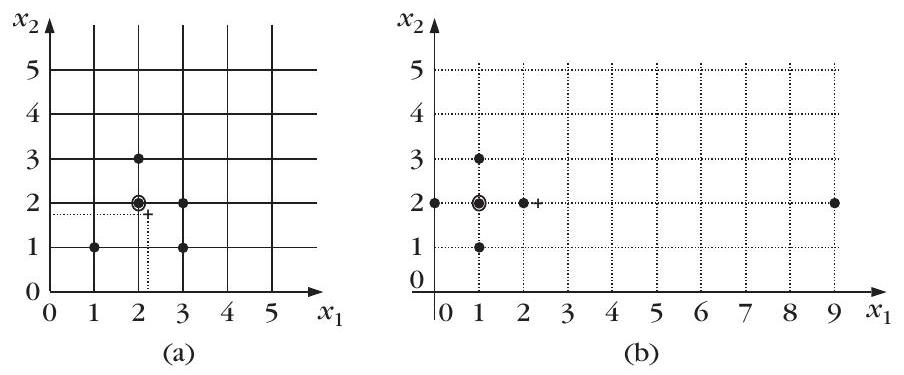
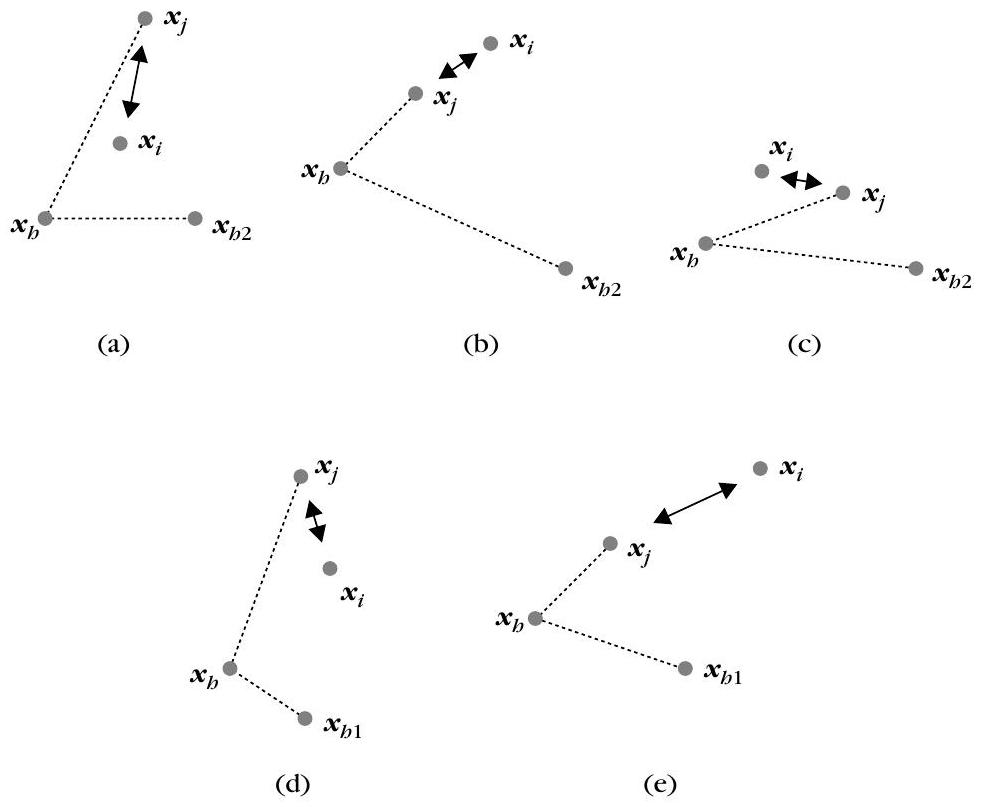
關於 $k$-medoids 的鄰居與 PAM，下列哪一項符合原文？
CLARA 與 CLARANS 的典型參數與做法，下列何者正確？
向量量化：碼書、最近鄰與重心條件
▼🤖 AI 生圖可用：重繪此示意圖的提示詞（結構化）
# AI 生圖提示詞 — kp-16 向量量化 VQ：碼書覆蓋分布，不是揭叢集 ## WHAT 畫一張左右對照示意圖。左欄：散佈在平面上的資料點（可均勻／無清晰團）被 m 個碼字的 Voronoi 區切開，每區一個實心碼向量 θj，視覺強調「碼書 + Voronoi 覆蓋整份分布」。右欄：同樣幾何手勢（最近鄰劃區 + 重心更新）但標出「看起來像 k-means／硬分群」，並用醒目一句對比「目的是代表分布，不是揭叢集」。可標最近鄰（編碼）與重心（解碼）兩條件。 ## WHY 要傳達的因果與反直覺：VQ 用 m 個碼字代表整份分布以壓縮；Lloyd 交替最近鄰與重心。當 P=1/N 時演算法巧合像硬分群，但目標不同——沒有團的資料，VQ 仍要鋪碼書。讀者遮住文字後仍應看出「左：碼字覆蓋空間；右：手勢像分群但目標不同」。 ## MUST show - 左／右（或上／下）對照：碼書 + Voronoi 覆蓋資料。 - 標出最近鄰／重心兩條件（繁中，不要 LaTeX $）。 - 一句「目的是代表分布，不是揭叢集」。 - 可暗示 m 個碼字、Lloyd 交替；數字精神對齊原文（如四點 1,2,8,9、m=2 亦可，非必須）。 - 用 svg-panel，不要 class="card"。 ## AVOID - 不要畫成名詞連連看（方框串「VQ」「Lloyd」「codebook」）。 - 不要放失真積分公式或 $D(Q)$、$R_j$ 這類符號。 - 不要暗示「VQ = 找叢集」或「沒有團就不能做 VQ」。 - 不要外鏈字體；不要用 class="card"。 ## STYLE 扁平教學示意，主題色 sky #0284c7 / #0369a3，背景 #f0f9ff，Voronoi 區淡藍分色，碼字實心、資料點空心或淺點，對比欄用強調色標目標差異，圓角 svg-panel，繁中標籤，幾何／對比承載因果。
一句話
向量量化（VQ）把空間切成 $m$ 區，每區用一個 code vector 代表，目的是壓縮儲存與頻寬。最佳量化器必須同時滿足最近鄰（編碼器）與重心（解碼器）兩個必要條件；Lloyd 算法就是兩者交替——形式上會跟廣義硬分群重合，但目標不一樣。
是什麼
向量量化與分群很近，多年來研究很密集 [Gray 84, Gers 92]。主要用途是資料壓縮：讓電腦儲存更省、通訊頻寬更好用。令 $T$ 為問題裡所有可能向量的集合，一般情形 $T$ 可以是 $\mathcal{R}^{l}$ 的連續子集。
想法很單純：把 $T$ 切成 $m$ 塊互異且蓋滿 $T$ 的區域 $R_j$，每一塊用一個 $l$ 維向量 $\boldsymbol{\theta}_j$ 代表，叫做 code vector 或 reproduction vector。之後看到 $\boldsymbol{x}\in T$，先判斷它落在哪一區 $R_j$，儲存或傳送時就改用 $\boldsymbol{\theta}_j$ 代替 $\boldsymbol{x}$。這一定會丟資訊，損失叫做 distortion（失真）。VQ 的主目標就是把 $R_j$ 與 $\boldsymbol{\theta}_j$ 選好，讓失真盡量小。
維度 $l$、大小 $m$ 的向量量化器 $Q$，是從 $T$ 映到一個有限集合 $C$ 的映射。$C$ 叫做 reproduction set（重建集合），也就是碼書（codebook），裡面有 $m$ 個輸出重建點，稱為 code vector 或 code word：
$$ Q:T\to C,\qquad C=\{\boldsymbol{\theta}_1,\boldsymbol{\theta}_2,\ldots,\boldsymbol{\theta}_m\},\quad\boldsymbol{\theta}_i\in T $$
每個碼向量 $\boldsymbol{\theta}_i$ 代表向量空間裡的一塊 $R_i$。
碼向量怎麼選才失真最小？通常是對一個失真函數（也叫 distortion function）對 $\boldsymbol{\theta}_j$ 做最佳化。令 $\boldsymbol{x}$ 為描述 $T$ 的隨機向量，$p(\boldsymbol{x})$ 為其 pdf。常用準則是平均期望量化誤差
$$ \begin{equation*} D(Q)=\sum_{j=1}^{m}D_j(Q) \tag{14.94} \end{equation*} $$
其中第 $j$ 區的平均量化誤差為
$$ \begin{equation*} D_j(Q)=\int_{R_j}d(\boldsymbol{x},\boldsymbol{\theta}_j)p(\boldsymbol{x})\,d\boldsymbol{x} \tag{14.95} \end{equation*} $$
$d$ 是距離測度（例如歐氏），在這裡也叫 distortion measure。若只有有限樣本 $\boldsymbol{x}_1,\ldots,\boldsymbol{x}_N$，準則改寫成
$$ \begin{equation*} D(Q)=\sum_{i=1}^{N}d\bigl(\boldsymbol{x}_i,Q(\boldsymbol{x}_i)\bigr)P(\boldsymbol{x}_i) \tag{14.96} \end{equation*} $$
其中 $Q(\boldsymbol{x}_i)\in C$ 是代表 $\boldsymbol{x}_i$ 的碼向量，$P(\boldsymbol{x}_i)\gt 0$ 為相應機率。
[Gers 92] 指出，一個量化器要最佳，必須滿足下列必要條件。
- 最近鄰條件（nearest neighbor，編碼器）：碼書 $C$ 固定時， $$ Q(\boldsymbol{x})=\boldsymbol{\theta}_j\quad\text{僅當}\quad d(\boldsymbol{x},\boldsymbol{\theta}_j)\le d(\boldsymbol{x},\boldsymbol{\theta}_k),\quad k=1,\ldots,m,\;k\ne j $$ 也就是：固定碼向量之後，$T$ 該怎麼切成 $R_j$——每個 $\boldsymbol{x}$ 都派給最近的那個 $\boldsymbol{\theta}_j$。
- 重心條件（centroid，解碼器）：分割 $R_1,\ldots,R_m$ 固定時，每個 $\boldsymbol{\theta}_j$ 要讓該區的積分最小： $$ \int_{R_j}d(\boldsymbol{x},\boldsymbol{\theta}_j)p(\boldsymbol{x})\,d\boldsymbol{x}=\min_{\boldsymbol{y}}\int_{R_j}d(\boldsymbol{x},\boldsymbol{y})p(\boldsymbol{x})\,d\boldsymbol{x} $$ 若 $T$ 是有限集合，積分改成求和。
計算碼書 $C$ 的一種做法：隨便給一組初始碼向量，然後交替套最近鄰條件與重心條件，直到滿足終止條件。這就是有名的 Lloyd 算法 [Lloy 82]。注意：若 $P(\boldsymbol{x}_i)=1/N$（對所有 $\boldsymbol{x}_i\in T$），Lloyd 巧合於廣義硬分群方案。這不意外——兩邊都在空間裡幫點代表找最好的位置。但目標到底不同：VQ 要讓這些點代表資料分布；分群則是要揭開 $X$ 裡的叢集（如果存在的話）。
文獻裡還有許多其他 VQ 模型，例如階層式與模糊向量量化器 [Lutt 89, Kara 96]。
為什麼
壓縮的本質是「用少數幾個碼字代替整塊連續（或大量）的向量」，所以一定有失真；$D(Q)$ 把失真拆成各區積分（或有限樣本的加權和），最佳化才有東西可寫。最近鄰決定「誰該用哪個碼字」（編碼），重心決定「這個區域的碼字該放哪」（解碼）——少一個都不是最佳量化器。Lloyd 把兩條件輪流做，看起來很像 $k$-means，但你要記得分群想找團、VQ 想描分布：沒有團的資料，VQ 照樣要鋪一組碼書。
怎麼用 / 怎麼記
- 口訣：切 $m$ 區、每區一個碼向量；量化器 $Q:T\to C$，$C$ 就是碼書。
- 失真：$D(Q)=\sum_j D_j(Q)$，$D_j=\int_{R_j}d(\boldsymbol{x},\boldsymbol{\theta}_j)p(\boldsymbol{x})\,d\boldsymbol{x}$ (14.94)(14.95)；有限樣本用 (14.96)。
- 兩個必要條件：編碼器用最近鄰；解碼器用重心。
- Lloyd：兩條件交替。若 $P(\boldsymbol{x}_i)=1/N$，形式上等於廣義硬分群，但 VQ 代表分布、分群揭開叢集。
- 延伸：還有階層／模糊 VQ [Lutt 89][Kara 96]。
依 [Gers 92]，最佳向量量化器的兩個必要條件分別是什麼？
關於 Lloyd 算法與硬分群的關係，下列何者最符合原文？